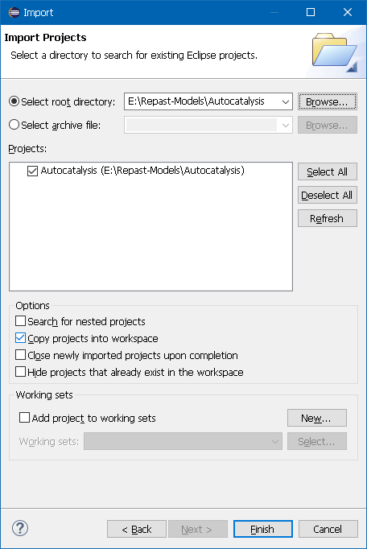

1. Introduction
Repast Simphony is a agent-based modeling toolkit and cross platform Java-based modeling system that runs under Microsoft Windows, Apple macOS, and Linux. Repast supports the development of extremely flexible models of interacting agents for use on workstations and computing clusters. Repast Simphony models can be developed in several different forms including the ReLogo dialect of Logo, point-and-click statecharts, Groovy, or Java, all of which can be fluidly interleaved.
This "cookbook style" reference manual provides background and code examples for many aspects of the Repast Simphony API but does not show how to build a complete working model from scratch. It is recommended that new users first review the introductory tutorial documents included with the Repast installer and available at the online Repast documentation page.
1.1. Support
The Repast development team maintains an active mail list monitors Stack Overflow questions related to Repast and agent-based modeling. Please see the Support page for the most current help links.
1.2. Installation
Please see the online Repast Downloads page for current release information.
2. Project Setup and Configuration
To begin the development of a Repast Simphony model in Java, ReLogo, Groovy, or Statecharts, a new project needs to be created, or an existing Java or Groovy project can be configured to use Repast capabilities.
Creating new Repast Simphony projects follows the standard Eclipse IDE new project creation wizard, but with customized options for Repast projects. Step-by-step instructions for creating new Repast projects are provided below. Please also refer to the online Eclipse Help pages for more details.
2.1. Creating a New Repast Project
-
Start Repast Simphony and open a new workspace. A blank workspace is set to the ReLogo perspective as shown below. Eclipse perspectives provide customized layouts of the Eclipse window components depending on the type of activity the user is doing. The ReLogo perspective provides a minimal view of development components. For developing Java-based Repast projects, switch to the Java perspective by clicking the Java perspective button in the upper right corner.
 Figure 1. New Eclipse Workspace
Figure 1. New Eclipse Workspace -
Right click in the Package Explorer panel located on the left side of the window, and select New → Project… as shown below:
Figure 2. New Eclipse Project -
The New Project wizard will appear prompting to select the type of project to create. Scroll down the list to the Repast Simphony category and select Repast Simphony Project as shown below:
Figure 3. New Repast Simphony Project Selection -
The Repast Simphony Project dialog appears and prompts for a project name. Provide the project name and optionally specify the project location. By default, the project will be saved in the workspace folder. Click Finish to complete the new project setup.
Figure 4. New Repast Project Dialog Example -
The new Repast project wizard will automatically create the project in the workspace and add the Repast development libraries to the project. A sample completed new Repast project in the Eclipse workspace is shown below. The project folder named "MyProject" in the example workspace contains a list of folders and files that are described in the section Project Contents.
Figure 5. New Repast Project in the Workspace
2.2. Creating a New ReLogo Project
ReLogo project creation is nearly identical to creating a Repast project. The steps are outlined below.
-
Start Repast Simphony and open a new workspace. A blank workspace is set to the ReLogo perspective as shown below. Eclipse perspectives provide customized layouts of the Eclipse window components depending on the type of activity the user is doing. The ReLogo perspective provides a minimal view of development components. Different Eclipse perspectives can be switched to, however it is recommended to continue using the ReLogo perspective with ReLogo projects.
Figure 6. New Eclipse Workspace -
Right click in the Package Explorer panel located on the left side of the window, and select New → Project… as shown below:
Figure 7. New Eclipse Project -
The New Project wizard will appear prompting to select the type of project to create. Scroll down the list to the ReLogo category and select ReLogo Project as shown below:
Figure 8. New ReLogo Project Selection -
The ReLogo Project dialog appears and prompts for a project name. Provide the project name and optionally specify the package name. By default, the project will be saved in the workspace folder. Click Finish to complete the new project setup.
Figure 9. New ReLogo Project Dialog Example -
The new ReLogo project wizard will automatically create the project in the workspace and add the Repast development libraries to the project. A sample completed new ReLogo project in the Eclipse workspace is shown below. The project folder named "MyRelogoProject" in the example workspace contains a list of folders and files that are described in the section Project Contents.
Figure 10. New ReLogo Project in the Workspace
2.3. Updating an Existing Repast Project
Existing Repast projects starting with version 2.0 generally do not require any special steps to update the project or model components. Users may optionally update the Repast model installer builder files that are located in the project’s /installer folder by using an automated update feature. The Repast model installer builder is a bundled utility that packages a Repast model into a self-contained JAR installer that can be distributed to other systems even if they do not have Repast installed on them. Since some version-specific configuration details are contained in the project’s installation folder, it it sometime necessary to update these files after a new version of Repast is installed.
-
To update the model installer builder configuration files and right click on the Repast project, select Repast Simphony → "Update model installer files". A dialog will appear asking to confirm the name of the model. Typically the correct name of the model will be automatically filled in, however the user can change the name in case the project name was changed at some point. Click OK and the model installer files will be updated. Note that no project files outside of the /installer folder will be modified.
 Figure 11. Updating an Existing Repast Simphony Project
Figure 11. Updating an Existing Repast Simphony Project
2.4. Adding Repast to an Existing Project
An existing Java project can be configured such that Repast and ReLogo models and components can be used. This involves adding the Repast Nature to the Eclipse project. Adding the Repast Nature requires a single step:
-
Right click on the project and select Repast Simphony → Add Repast Simphony Nature. This will add the Repast libraries to the project class path so that you can reference Repast classes and run simulations from your project without needing to manually add all of the Repast libraries and dependencies.
Figure 12. Adding the Repast Nature to a Java Project -
After the Repast Nature has been added, the existing project will be modified to include the Groovy and Repast development libraries as shown in the following figure. Note that the Repast configuration files have not been added to the project, as the Repast Nature only provides access to the libraries. To fully build a Repast model with the updated Java project, the project configuration files will need to be manually added.
Figure 13. Workspace Showing the Repast Nature on a Java Project
2.5. Importing a Model
Users who have existing Repast projects or who have received a Repast project from someone else may import the project into a new version of Repast Simphony using the following steps:
-
Right click on the Package Explorer and select "Import…" The Eclipse import wizard dialog will appear prompting to select the type of Eclipse item to import. Open the "General" folder, select "Existing Projects into Workspace" and click Next as shown in the following figure.
Figure 14. Eclipse Project Import Wizard Dialog -
In the Eclipse project import dialog, browse and select the project folder to open. If the selected folder contains a valid Eclipse project, the project will be listed in the Projects box in the dialog as shown in the following figure. In this example, the "Autocatalysis" project is selected. By default the option "Copy projects into workspace" is selected. This will make a copy of the selected project and place it in the workspace location and is useful when users would like to maintain a backup of the original project, since workspace edits will not be made in the workspace project location instead of the original project location.
Figure 15. Eclipse Project Import Wizard Dialog Showing Selected Project.
2.6. Project Contents and Model Configuration Files
Repast and ReLogo projects contain a number of folders and files that are required and contain essential model configuration data. Repast Java project developers typically modify these files to suit the model properties, however ReLogo project developers typically will not need to modify any of these files.
-
The following figure displays the project contents for a newly created Repast Java project. If the project contents are not visible, it may be necessary to switch to the Java perspective by clicking the Java perspective button in the upper right corner.
Figure 16. Workspace Showing the full contents of aRepast Java Project
The following list of folders contain essential Repast project configuration files and should not be deleted or renamed:
-
src is the source code folder that contains all of the project source code such as agent class files.
-
batch folder contains batch run parameter XML file that is normally used when running Repast models in batch mode.
-
installer folder contains configuration files used by the Repast model builder installer that packages stand-alone distributable versions of the user’s Repast model.
-
launchers folder contains the Eclipse launch configuration files that are used to run the Repast model.
-
MyProject.rs folder contains the Repast model meta-data XML files that describe specific details about the Repast model, like agent locations, types of displays, charts, and logging information. The prefix of this folder (before .rs) is depndend on the project name.
After creating a new Repast project, the model meta-data XML files need to be updated according to the types of components that a user would like to include in the model. The only two files that need to be directly edited are the user_path.xml and the context.xml files. All other project configuration files are automatically updated by the Repast GUI, although they may be manually edited as well.
2.6.1. user_path.xml
The user_path.xml file located in the MyProject.rs folder provides information to the Repast runtime about where to look for agent files and other files or libraries needed by the model. The default user_path.xml file created by the Repast new project wizard is shown below. In many cases, the default user_path.xml file does not need to be changed at all since the default configuration is the least constrained in terms of what agents and libraries are made available to the Repast runtime.
<model name="MyProject" xmlns:xsi="http://www.w3.org/2001/XMLSchema-instance" xsi:noNamespaceSchemaLocation="http://repast.org/scenario/user_path">
<classpath>
<agents path="../bin" />
<entry path="../lib" />
</classpath>
</model>

|
In many cases, the default user_path.xml file does not need to be changed at all. |

|
The only unique entry in the default user_path.xml file is the model name attribute which is the same as the project name. |
The path element is a reference to a directory or jar file. If the directory contains jars then all those jars are added to the classpath. If the directory or its children contain .class files then the directory is added to the classpath. More than one path can be specified. Multiple paths should be comma-separated. For .class files, the path functions as a classpath and so it must be the directory immediately above the directories corresponding to the class packages. For example, given the class repast.simphony.MyClass and the directory structure X/bin/repast/simphony/MyClass.class, the path should be X/bin. This applies to path in both entry and agents elements.
As may be evident, the purpose of the user_path.xml file is to provide the locations of the model agent classes to the Repast runtime. The default user_path.xml sets the agents path value to "../bin" which is the default location of compiled class files in Java projects. The bin folder is typically not visible in the Java perspective. When the agents path is set to "../bin", it means that the Repast runtime will look in the project bin folder which is the root folder for all compiled classes in the project. In other words, all class files in the project will be made available to the Repast runtime as "Agents". This special classification is used in the runtime to scan agent classes for annotations, such as those used for scheduling, and all agent classes will appear in the runtime wizards for creating displays or data collectors.
For small projects, providing the entire set of project classes to the Repast agents path may be fine, however when projects become very large, it may be beneficial to filter what types of classes the Repast runtime considers "agents". The filter can be specified in the agents path element as follows:
<agents path="../bin" filter="myProject.somepackage.agents.*"/>The filter value specifies which package contents are to be loaded as "agents" by the Repast runtime. In the above example, it is assumed that the package myProject.somepackage.agents exists, and that the agent classes are located in this package. Note that the wildcard character "*" is required to specify that all classes in the package should be loaded as agents.
| Attribute Name | Description | Required |
|---|---|---|
path |
Path to agent classes folder |
YES |
filter |
Specifies a class filter on the agents path(s) |
NO |
The entry path elements in the user_path.xml file provide other types of model classes to the Repast runtime that aren’t necessarily considered agents. Classes like utility functions, file loaders, etc that are used by agents, but are not agents themselves could be provided to an entry path. The default value of "..lib" configures the Repast runtime to scan this folder for model classes, and the user can place JAR files in the lib folder for things like third party libraries used by the model. When a folder is specified as in the default user_path.xml, the entire contents of the folder is made available to the Repast runtime.
By default, entry path values will not automatically be scanned for Java annotations as with the agents path entry. If an entry path refers to classes that do contain Repast-specific annotations like @ScheduledMethod, then the annotations option should be specified as follows:
<entry path="../somepath" annotations="true"/>| Attribute Name | Description | Allowed Values | Required |
|---|---|---|---|
path |
Path to model classes folder |
Any string |
YES |
annotations |
Specifies if path should be scanned for Repast-specific annotations |
true or false (default is false) |
NO |
Finally, the builtin path element is for cases when a user needs to add an agent class existing in one of the Repast plugins. The user specifies the canonical class name as the fullname as follows:
<builtin fullname="repast.simphony.someclass"/>| Attribute Name | Description | Required |
|---|---|---|
fullname |
Path to Repast agent classes |
YES |
|
|
For the builtins, since the class can be in any one of the repast plugins, without hard coding the path, it is difficult to use the filter mechanism on all the plugins. This means that unless we can figure out a way to figure out the path of a resource containing a package, we must specify each individual class that we’d like to be considered an agent class. The good news is that this is not a common usage. |
2.6.2. context.xml
The context.xml file located in the MyProject.rs folder provides information to the Repast runtime about model meta-data such as the types of projections and context hierarchy. The default context.xml file created by the Repast new project wizard is shown below. In almost all cases, the default context.xml file needs to be changed to include model specific details.
<context id="MyProject" xmlns:xsi="http://www.w3.org/2001/XMLSchema-instance" xsi:noNamespaceSchemaLocation="http://repast.org/scenario/context">
</context>|
|
In almost all cases, the default context.xml file needs to be changed to include model specific details. |
As is apparent, the default context.xml is essentially empty, aside from the root context element which specifies the name of the root context "MyProject" which by default is the same as the project name. The additional xmlns and xsi values specify the XML descriptor information which provides content assistence in XML editors like in Eclipse.
context.xml contains the context heirarchy information.
<context id="..." class="...">
<attribute id="..." value="..." type="[int|long|double|float|boolean|string|...]"
display_name="..." converter="..."/>
<projection id="..." type="[network|grid|continuous space|geography|value layer]">
<attribute id="..." .../>
</projection>
<context id="..." class="...">
...
</context>
</context>| Attribute Name | Description | Required |
|---|---|---|
id |
Unique identifer for the context |
YES |
class |
Fully qualitifed name of a Context implementation. If this is present this context will be used instead of the default |
NO |
| Attribute Name | Description | Required |
|---|---|---|
id |
Unique identifer for the attribute |
YES |
value |
Default value of the attribute |
YES |
type |
The primitive or class type of the attribute |
YES |
display_name |
Optional name used to display the attribute when it is used as a model parameter |
NO |
converter |
Optional implementation of StringConverter used to convert the attribute to and from a string representation |
NO |
For example:
<context id="MyContext">
<attribute id="numAgents" value="20" type="int" display_name="Initial No. Agents"/>
</context>| Attribute Name | Description | Required |
|---|---|---|
id |
Unique identifer for the projection |
YES |
type |
The projection type (network, grid, geography, continuous space, value layer) |
YES |
If certain special attributes are present, then the context.xml file can be used to instantiate the actual context hierarchy. The attributes are defined in the repast.simphony.dataLoader.engine.AutoBuilderConstants.
| Attribute Id | Description | Allowed values | type | Required |
|---|---|---|---|---|
_timeUnits_ |
The tick unit type |
Any string that can be parsed by Amount.valueOf |
string |
NO |
| Attribute Id | Description | Allowed values | type | Required |
|---|---|---|---|---|
Any attribute of int type |
Any int attributes will be used as the dimensions of the grid. These will be processed in order such that the first becomes the width (x) dimensions, the next the height (y) and so on. |
Any int |
int |
YES |
border rule |
Specifies the behavior of agents when moving over a grid’s borders. |
bouncy, sticky, strict, or periodic |
string |
YES |
allows multi |
whether or not the grid allows multiple agents in each cell |
true or false (default is false) |
boolean |
NO |
For example:
<context id="MyContext">
<projection id="MyGrid" type="grid">
<attribute id="width" type="int" value="200"/>
<attribute id="height" type="int" value="100"/>
<attribute id="border rule" type="string" value="periodic" />
<attribute id="allows multi" type="boolean" value="true"/>
</projection>
</context>will create a 200 x 100 grid with an id of "MyGrid". The border rule for the grid is "periodic" so the grid will wrap, forming a torus. The grid will also allow multiple agents in each cell.
| Attribute Id | Description | Allowed values | type | Required |
|---|---|---|---|---|
Any attribute of int or double type |
Any int or double attributes will be used as the dimensions of the grid. These will be processed in order such that the first becomes the width (x) dimensions, the next the height (y) and so on. |
Any int or double |
int or double |
YES |
border rule |
Specifies the behavior of agents when moving over a space’s borders. |
bouncy, sticky, strict, or periodic |
string |
YES |
For example:
<context id="MyContext">
<projection id="MySpace" type="continuous space">
<attribute id="width" type="int" value="200"/>
<attribute id="height" type="int" value="100"/>
<attribute id="border rule" type="string" value="strict" />
</projection>
</context>will create a 200 x 100 continuous space with an id of "MySpace". The border rule for the grid is "strict" so any movement across the border will cause an error.
| Attribute Id | Description | Allowed values | type | Required |
|---|---|---|---|---|
directed |
Whether or not the network is directed |
true or false. Default is false |
boolean |
NO |
edge class |
The fully qualified name of a class that extends RepastEdge. Any edges created by the network will be of this type. |
Any properly formatted class name extending RepastEdge |
string |
NO |
For example:
<context id="MyContext">
<projection id="MyNetwork" type="network">
<attribute id="directed" type="boolean" value="true"/>
</projection>
</context>will create a network with an id of "MyNetwork". The network will be directed and use the default RepastEdge as the edge type.
2.7. Distributing Your Model
Models created with Repast Simphony may easily be distributed with the provided Install Builder tool. This tool builds a distributable installer that anyone may use to install the model to their computer. The only requirement for those to who the model is distributed is the target system to have a current Java Runtime Environment.
To start the Install Builder, select Build Installer in the run menu
The builder make take a few minutes to complete the installer. Once this process is complete, a message "BUILD SUCCESSFUL" should be visible in the Console window.
3. Repast Model Design Fundamental Concepts
Repast Simphony has an architectural design based on central principles important to agent-based modeling. These principles combine findings from many years of ABMS toolkit development and from experience applying the ABMS toolkits to specific applications. There are a variety of design goals for Repast S including the following:
-
There should be a strict separation between models, data storage, and visualization.
-
Most toolkit functions should be available without having to implement interfaces, extend classes, or manage proxies.
-
User model components should be plain old Java objects (POJOs) that are accessible to and replaceable with external software (e.g., legacy models and enterprise information systems).
-
Common tasks should be automated when possible.
-
Imperative boilerplate code should be eliminated or replaced with declarative runtime configuration settings when possible.
-
Idiomatic code expressions (i.e., repeatedly used blocks of code such as loops that scan lists of agents) should be simple and direct.
The Context is the core concept and object in Repast Simphony. It provides a data structure to organize your agents from both a modelling perspective as well as a software perspective. Fundamentally, a context is just a bucket full of agents, but they provide more richness.
The core data structure in Repast S is called a Context. The Context is a simple container based on set semantics. Any type of object can be put into a Context with the simple caveat that only one instance of any given object can be contained by the Context. From a modeling perspective, the Context represents an abstract population. The objects in a Context are the population of a model. For simplicity, we refer to these objects as proto-agents. However, the Context does not inherently provide any mechanism for interaction between proto-agents. One could say that a Context represents a "soup" where the agents have no concept of space or relation, but the Context is actually more of a proto-space. The Context provides the basic infrastructure to define a population and the interactions of that population without actually providing the implementations. As a proto-space, the Context holds proto-agents that have idealized behaviors, but the behaviors themselves cannot actually be realized until a structure is imposed on them.
Repast S Contexts can be hierarchically nested to form a tree of parent Contexts and their sub-Contexts. Contexts are containers for agents and projections. Agents can join or leave Contexts at any time and can simultaneously exist in multiple Contexts and sub-Contexts. Projections specify the relationship between the agents in a given context. Projections include:
-
multidimensional discrete grids
-
multidimensional continuous spaces
-
networks
-
geographical information systems (GIS) spaces.
Each Context can contain as many projections as needed for a given model. Each Projection in each Context defines a set of relationships between each the agent in that context. For example, a Three Dimensional Continuous Space Projection in a given Context defines the spatial relationship (i.e., Euclidean distance) between each agent. A Network Projection containing social relationships in the same Context might define friendship relations between the agents. A second Network Projection in the given Context might define family relationships between the agents.
Repast S provides a mechanism to query a model’s Context hierarchy and the associated Projections and agents. This mechanism provides methods to find agents with specific types, agents with selected individual properties, and agents with given Projections properties (e.g., agents at a given location in a grid or agents with given kinds of links to other agents).
Queries are defined using the following conceptual predicates:
-
Equals: This predicate determines whether the object is equal to a given object.
-
Property equals: This predicate determines whether a property in the object is equal to a given value.
-
Property less than: This predicate determines whether a property in the object is less than a given value.
-
Property greater than: This predicate determines whether a property in the object is greater than a given value.
-
Network adjacent: This predicate determines whether the object is linked to a given object in a specified network.
-
Network successor: This predicate determines whether the object has an inbound edge from a given object in a specified network.
-
Network predecessor: This predicate determines whether the object has an outbound edge to a given object in a specified network.
-
Touches: This GIS predicate determines whether the object touches a given object in space.
-
Contained by: This GIS predicate determines whether the object is contained by a given object in space.
-
In envelope: This GIS predicate determines whether the object is within a given envelope (bounding box) in space.
-
And: This predicate implements intersection.
-
Or: This predicate implements union.
-
Not: This predicate implements negation.
-
Von Neumann: This predicate determines whether an object is within the Von Neumann neighborhood of a given object in a grid.
-
Moore: This predicate determines whether an object is within the Moore Neighborhood of a given object in a grid.
-
Within distance: This GIS and non-GIS predicate determines whether the object is within a given distance of a specified object in a GIS space, a non-GIS grid or continuous space, or within a given path length in a network. Concrete subclasses implement specific functions for each projection type.
Searches that utilize these conceptual predicates can also be performed imperatively using Java syntax or declaratively using watcher syntax. Both of these approaches are discussed later in this section. Groovy uses the same syntax as Java for the predicates. When used in an imperative mode, queries normally return a list scanning object or Iterator. These iterators can be used in programmed agent behaviors to operate on and react to members of the list.
The Repast S Watcher mechanism builds on the Context hierarchy and query system to provide behavioral triggers. Watchers allow modelers to easily:
-
Define queries to find other agents to monitor
-
Define properties of other agents to be monitored
-
Define activation conditions of the monitored properties and other properties
-
Specify the time for a response if the activation conditions are triggered
-
Specify the behavior to invoke when the activation conditions are triggered
The Repast Watchers are efficiently implemented using dynamic code generation that instruments the monitored agents with the needed behavioral activation checks.
Repast Simphony’s combination of Contexts, Projections, Queries, and Watchers provides a powerful and flexible environment for ABMS implementation.
3.1. Projections
While Contexts create a container to hold your agents, Projections impose a structure upon those agents. Simply using Contexts, one could never write a model that provided more than a simple "soup" for the agents. The only way to reference other agents would be randomly. Projections allow the modeller to create a structure that defines relationships, whether they be spatial, network, or something else. A projection os attached to a particular Context and applies to all of the agents in that Context. This raises an important point:

|
An object (agent) must exist in a Context before it can be used in a projection. |
Multiple projections can be addeded to the same context therefore it is possible, for example, for a context to contain a grid, a geography, and a network.
Agents may reference projections through their containing context by specifying the name of the projections, e.g. "mynetwork":
Context context = ContextUtils.getContext (this)
Projection projection = context.getProjection("mynetwork");The returned Projection object will have limited value unless is is cast to the specific type (e.g. Network or Grid):
Context context = ContextUtils.getContext (this)
Network network = (Network)context.getProjection("mynetwork");3.1.1. Creating Projections
In general, projections are created using a factory mechanism in the following way.
-
Find the factory
-
Use the factory to create the projection
GridFactory factory = GridFactoryFinder.createGridFactory(new HashMap());
Grid grid = factory.createGrid("Simple Grid", context, ...);ContinuousSpaceFactory factory = ContinuousSpaceFactoryFinder.createContinuousSpaceFactory(new HashMap());
ContinuousSpace space = factory.createContinuousSpace("Simple Space", context, ...);Each factory creates a projection of a specific type and requires the context that the projection is associated with and the projections name as well as additional arguments particular to the projection type. These additional arguments are marked above with "…" and are explicated on the individual pages for that projection.
4. Working With Contexts
4.1. Finding Contexts
The Repast ContextUtils class provides a number of utility functions for finding Context instances from the model code.
|
|
Generally there is no need to store local references to Contexts (say within an agent) since the Context in which an agent resides can always be referenced. |
To reference the current context of an agent:
Context context = ContextUtils.getContext (agent)The context’s parent context (if exists) can similarly be found using:
Context parentContext = ContextUtils.getParentContext (context)4.2. Adding and Removing Objects in Contexts
The Repast Context interface extends the standard Java Collection so that objects can be added or removed to or from contexts similar to how one would perform such operations with Java collections such as lists.
-
To add an object to a context:
context.add(object); -
To remove an object from a context:
context.remove(object); -
Similarly, to add a context that is a subcontext:
context.addSubContext(subContext); -
To remove a context that is a subcontext:
context.removeSubContext(subContext);
4.3. Finding Objects in Contexts
Objects (typically agents) contained in a context can be referenced in several ways.
-
To get a single random object from a reference:
Object o = context.getRandomObject(); -
To get a random iterable collection of some (count) objects of a specific class:
Iterable collection = context.getRandomObjects(MyClass.class, count); -
To get a random iterable collection of all objects of a specific class:
IndexedIterable collection = context.getObjects(MyClass.class);
The typical way to access the objects in the returned iterable collections is:
for (Object o : collection){
// do something with o here.
}4.4. Implementing Custom Contexts
User models can implement their own custom Context implementations, either by creating a complete Context interface implementation from scratch, or by extending the Repast DefaultContext class. Extending DefaultContext is the recommended route since the default implementation contains all of the working implementations for the Context interface. User context imlplementations can be used in model code in exactly the same way as the default Repast Context.
4.5. Context Loading
Context loading is the process of populating the root model context with agents, projections, and sub-contexts and occurs when a model run is initialized, and may be thought of as the model’s "main" function that assembles the model components. The Repast ContextBuilder interface is used for model implementations that perform context loading:
/**
* Interface for classes that build a Context by adding projections,
* agents and so forth.
*/
public interface ContextBuilder<T> {
/**
* Builds and returns a context. Building a context consists of filling it with
* agents, adding projects and so forth. The returned context does not necessarily
* have to be the passed in context.
*
* @param context
* @return the built context.
*/
Context build(Context<T> context);
}Models should include a single ContextBuilder implementation. The context
argument in the build() method is an instance of the Repast DefaultContext
that can be populated and returned. A custom user-defined Context
implementation could be created and returned instead of the default provided
context.
|
|
All of the Repast Simphony models implemented in Java use a ContextBuilder to create the main context and populate it with agents. |
The ContxtBuilder is called by the Repast runtime at initialization, but the implementing user model class (e.g. MyContextBuilder) is not specified in the scenario.xml file until it is set via the runtime menu option. To specify the user-defined ContextBuilder, see the section on Data Loaders.
5. Scheduling
There are basically three ways to work with the Repast Simphony Scheduler. No one is better than the other and they each have their specified purpose.
5.1. Directly Schedule an action
This is similar to the way that actions have always been scheduled in repast with a slight twist. In this scenario, you get a schedule and tell it the when and what to run. An example of adding an item to the schedule this way is as follows:
//Specify that the action should start at tick 1 and execute every other tick
ScheduleParameters params = ScheduleParameters.createRepeating(1, 2);
//Schedule my agent to execute the move method given the specified schedule parameters.
schedule.schedule(params, myAgent, "move");The biggest change here is that instead of using one of the numerous methods to set up the parameters for the action like you would in repast 3, you just use an instance of ScheduleParameters. ScheduleParameters can be created using one of several convient factory methods if desired. A slight alteration of this is:
//Specify that the action should start at tick 1 and execute every other tick
ScheduleParameters params = ScheduleParameters.createRepeating(1, 2);
//Schedule my agent to execute the move method given the specified schedule parameters.
schedule.schedule(params, myAgent, "move", "Forward", 4);This example schedules the same action with the same parameters, but passes arguments to the method that is to be called. The "Forward" and 4 will be passed as arguments to the method move. The assumption is that the signature for move looks like this:
public void move(String direction, int distance)5.2. Schedule with Annotations
Java 5 introduced several new and exciting features (some of which are used above), but one of the most useful is Annotation support. Annotations, in java, are bits of metadata which can be attached to classes, methods or fields that are available at runtime to give the system more information. Notable uses outside repast includes the EJB3 spec which allows you to create ejbs using annotations without requiring such complex descriptors. For repast, we thought annotations were a perfect match for tying certain types of scheduling information to the methods that should be scheduled. The typical case where you would use annotations is where you have actions whose schedule is know at compile time. So for example, if you know that you want to have the paper delivered every morning, it would be logical to schedule the deliverPaper() method using annotations. Without going into extensive documentation about how annotations work (if you want that look at Java 5 Annotations), here is how you would schedule an action using annotations:
@ScheduledMethod(start=1 , interval=2)
public void deliverPaper()The arguments of the annotation are similar to the properties for the ScheduleParameters object. One particularly nice feature of using annotations for scheduling is that you get keep the schedule information right next to the method that is scheduled, so it is easy to keep track of what is executing when. Most of the time, objects with annotations will automatically be added to the schedule, however, if you create a new object while your simulation is running, this may not be the case. Fortunately, the schedule object makes it very easy to schedule objects with annoations.
//Add the annotated methods from the agent to the schedule.
schedule.schedule(myAgent);The schedule will search the object for any methods which have annotations and add those methods to the schedule. This type of scheduling is not designed to handle dynamic scheduling, but only scheduling, where the actions are well defined at compile time.
5.3. Scheduling Global Behaviors
There’s at least two ways to do this. Both assume that you create your model in your own ContextBuilder Java class.
The first way requires that you have your ContextBuilder extend DefaultContext. Once you’ve done this you can add @ScheduledMethods to this ContextBuilder to perform some global action.
public class MyContextBuilder extends DefaultContext implements ContextBuilder {
/**
* Builds and returns a context. Building a context consists of filling
* it with agents, adding projects and so forth. The returned context
* does not necessarily have to be the passed in context.
*
* @param context
* @return the built context .
*/
public Context build ( Context <T> context ) {
...
}
@ScheduledMethod ( start = 1)
public void step () {
// my " global " behavior
}
}The second way uses the RunEnvironment object to get a reference to the current Schedule with which can add your behavior. For example
public class MyContextBuilder implements ContextBuilder {
public Context build ( Context <T> context ) {
ISchedule schedule = RunEnviroment.getCurrentSchedule ();
ScheduleParameters params = ScheduleParameters.createOneTime(1);
schedule.schedule(params, this, " step ");
}
public void step () {
// my global behavior
}
}5.4. Schedule with Watcher
Scheduling using watchers is the most radical of the new scheduling approaches. Watchers are designed to be used for dynamic scheduling where a typical workflow is well understood by the model designer. Basically, a watcher allows an agent to be notified of a state change in another agent and schedule an event to occur as a result. The watcher is set up using an annotation (like above), but instead of using static times for the schedule parameters, the user specifies a query defining whom to watch and a query defining a trigger condition that must be met to execute the action. That’s a bit of a mouthfull, so let’s take a look at an example to hopefully clarify how this works. (this code is from the SimpleHappyAgent model which ships with Repast Simphony)
@Watch(watcheeClassName = "repast.demo.simple.SimpleHappyAgent",
watcheeFieldName = "happiness", query = "linked_from",
whenToTrigger = WatcherTriggerSchedule.LATER, scheduleTriggerDelta = 1,
scheduleTriggerPriority = 0)
public void friendChanged(SimpleHappyAgent friend) {
if (Math.random() > .25) {
this.setHappiness(friend.getHappiness());
} else {
this.setHappiness(Random.uniform.nextDouble());
}
System.out.println("Happiness Changed");
}There is a fair amount going on in this, so we’ll parse it out piece by piece. First, note that there is a @Watch annotation before the method. This tells the Repast Simphony system that this is going to be watching other objects in order to schedule the friendChanged() method. The first parameter of the annotation is the watcheeClassName. This defines the type of agents that this object will be watching. The second argument, watcheeFieldName, defines what field we are interested in monitoring. This means that there is a variable in the class SimpleHappyAgent, that we want to monitor for changes. When it changes, this object will be notified. The query argument defines which instances of SimpleHappyAgent we want to monitor. In this case we are monitoring agents to whom we are linked. For more documentation on arguments for this query can be found at: Watcher Queries. The whenToTrigger argument specifies whether to execute the action immediately (before the other actions at this time are executed) or to wait until the next tick. The scheduleTriggerDelta defines how long to wait before scheduling the action (in ticks). Finally the scheduleTriggerPriority allows you to help define the order in which this action is executed at it’s scheduled time.
Let me give a practical example of how this would be used. Let’s say you are modelling electrical networks. You may want to say that if a transformer shuts down, at some time in the future a plant will shut down. So you make the plant a watcher of the transformer. The plant could watch a variable called status on the transformers to which it is connected, and when the transformer’s status changes to OFF, then the plant can schedule to shut down in the future. All done with a single annotation. It could look like this:
@Watch(watcheeClassName = "infr.Transformer", watcheeFieldName = "status", query =
"linked_from", whenToTrigger = WatcherTriggerSchedule.LATER, scheduleTriggerDelta = 1)
public void shutDown(){
operational = false;
}Obviously that is a simple example, but it should give you an idea of how to work with scheduling this way.
5.5. Watcher Queries
Watcher queries are boolean expressions that evaluate the watcher and the watchee with respect to each other and some projection or context. The context is the context where the watcher resides and the projections are those contained by that context. In the following "[arg]" indicates that the arg is optional.
-
colocated - true if the watcher and the watchee are in the same context.
-
linked_to [network name] - true if the watcher is linked to the watchee in any network, or optionally in the named network
-
linked_from [network name] - true if the watcher is linked from the watchee in any network, or optionally in the named network
-
within X [network name] - true if the path from the watcher to the watchee is less than or equal to X where X is a double precision number. This is either for any network in the context or in the named network.
-
within_vn X [grid name] - true if the watchee is in the watcher’s von neumann neighborhood in any grid projection or in the named grid. X is the extent of the neighborhood in the x, y, [z] dimensions.
-
within_moore X [grid name] - true if the watchee is in the watcher’s moore neighborhood in any grid projection or in the named grid. X is the extent of the neighborhood in the x, y, [z] dimensions.
-
within X [geography name] true if the orthodromic distance from the watcher to the watchee is less than or equal to X meters, otherwise false. Watcher queries can be combined using the keywords not and and as well as ( to establish precedence. For example
within 2 'family' and not linked_to 'business'The queries are tested in WatcherQueryTests and defined as annotations in MyWatcher.
5.6. Stopping and Pausing the Model Using the Schedule.
The Repast schedule can be stopped or paused by model code, either scheduled at predetermined time, or immediately via some event. The following scheduling options are available:
-
RunEnvironment.getInstance().endAt(endAt); will schedule the model end time at the double value endAt parameter.
-
RunEnvironment.getInstance().pauseAt(pauseAt); will schedule the model pause time at the double value pauseAt parameter
-
RunEnvironment.getInstance().pauseRun(); will pause the run immediately.
-
RunEnvironment.getInstance().resumeRun(); will resume the run from a paused state. Note that it is not possible to resume the run from a paused state if the resumeRun() method is dependent on model code, since the model code will never execute from a paused state. A model developer would typically call resumeRun() from some other model object listening for an event like a mouse input event.
-
RunEnvironment.getInstance().endRun(); will end the run immediately.
6. Grid Projections
Grids are a mainstay of agent based simulation. Many of the earliest simulations such as Schelling’s Dynamic Models of Segregation, Heatbugs, and Sugarscape were originally built on grids. Grids are a 1 or more dimensional data structure that is divided up into a number of cells. These cells can be referenced by their integer coordinates. In other words, a grid is an n-dimensional matrix. Even though grids have been used in agent based simulation since it’s inception, they still have value today. These data structures are very efficient and provide a number of different ways to define neighborhoods. While grids don’t offer the flexibility of an abstract network or the realism of a continuous or GIS space, the grid can be used to simulate spaces and to create highly structured relationships between agents. While some think of grids to represent space, there is no reason why a grid couldn’t be used define more abstract kinds of relationships. No matter how you look at it, grids are still a powerful tool in an overall agent based toolkit.
Repast Simphony provides a rich set of tools to work with grids of all kinds. Specifically, it supports * 2D, 3D and ND grids, * querying for Von Neumann and Moore neighborhoods, * Toroidal, Reflective and Fixed Border conditions.
6.1. Creating A Grid
Creating a grid in Repast Simphony is similar to creating the other projections. Your agents must exist in the context in order to exist in the grid, and you want to create the grid using a factory to make sure that it is initialized properly.
GridFactory factory = GridFactoryFinder.createGridFactory(new HashMap());
Grid grid = factory.createGrid("My Grid", context, gridBuilderParameters);Pass the method a name (so that you can look up your grid later) and the context that will back the grid. But what is that last argument? The gridBuilderParameters. GridBuilderParameters are used to specify the properties of the grid itself, such as its dimensions, its border behavior, and how agents are initially added to the grid.
The GridBuilderParameters class contains a variety of static methods for creating specific types of GridBuilderParameters. For example,
GridBuilderParameters params = GridBuilderParameters.singleOccupancy2DTorus(
new SimpleAdder<Agent>(), 10, 10);will create parameters for a 10x10 torus where each cell can only have a single occupant. Other static methods (see the javadocs) allow you to create other types of grids. In general though, youwill always have to specify a GridAdder and perhaps a GridPointTranslator when creating GridBuilderParameters. You will also have to specify the dimensions. These will be the last arguments to the method.
6.2. GridAdder
An object doesn’t exist in the projection until it is added to the context, and once it is added to the context, it is automatically added to the projection. But where do we put it in the grid? That’s where the GridAdder interface comes in. The adder allows you to specify where to place an object once it has been added to the context. It has a simple method:
public void add(Grid destination, U object);In this case, the destination is the type of projection to which we are adding our object (a grid). Object is the object we want to add to that projection. So, <U> is whatever we’re adding. Basically, to implement this interface, you just take in an object and do something with it in the supplied projection. Ok, let’s get a bit more concrete. Let’s say that we have a Grid and when an object is added to the grid, we want to locate it randomly. Here is the implementation for that:
public void add(Grid<T> space, T obj) {
Dimensions dims = space.getDimensions();
int[] location = new int[dims.size()];
findLocation(location, dims);
while (!space.moveTo(obj, location)) {
findLocation(location, dims);
}
}
private void findLocation(int[]location, Dimensions dims) {
for (int i = 0; i < location.length; i++) {
location[i] = RandomHelper.getDefault().nextIntFromTo(0, dims.getDimension(i) -1);
}
}The add method randomly generates locations and puts the objects into that location (assuming the grid allows the object to be there). This little bit of code sets up a random space for you as you add agents. Not surprisingly, this is the code for the RandomGridAdder which comes with Repast Simphony. This behaviour may not be what you want. The most basic Adder we provide is the SimpleAdder; This Adder doesn’t actually locate the object anywhere in the grid. It just allows the object to be used in the grid. The object won’t appear to have a location until you call
grid.moveTo(object, x, y);This is a very useful adder because you don’t have to know where the agent is supposed to be located in advance. Let’s look at one example of writing your own Adder. In this case, let’s assume that our agents have their grid coordinates stored. The adder just needs to use those coordinates to locate the agents properly. We’ll call the Interface Located:
public interface Located{
public int getX();
public int getY();
}Let’s write an adder that knows how to work with this:
public class LocatedAdder<Located> implements GridAdder<Located> {
public void add(Grid<Located> grid, Located object){
grid.moveTo(object, object.getX(), object.getY());
}
}This will add the object to the grid at the location specified by the agent itself. This doesn’t handle any errors or anything, but it should give you an idea of how to create your own adder.
6.3. GridPointTranslators
A GridPointTranslator determines the border behavior of a grid. The border behavior is what happens when an agents moves past the border of a grid. Five kinds of border behavior classes are described below together with a description of how the behave in response to a Grid’s moveTo and moveBy (the moveBy methods are moveByDisplacement and moveByVector) methods.
-
StrictBorders defines a strict boundary that cannot be crossed without throwing a SpatialException. Consequently, any moveTo or moveBy across the border will throw an exception.
-
StickyBorders defines a "sticky" border that to which an agent will "stick" in a moveBy. However, a moveTo across the border will still throw a SpatialException.
-
InfiniteBorders defines infinite borders that the agent will never cross.
-
BouncyBorders defines a bouncy border that the agent will bounce off at the appropriate angle in a moveBy. However, a moveTo across the border will still throw a SpatialException.
-
WrapAroundBorders defines borders that wrap around to their opposite borders. This mean moveTo and moveBy across the border will cross the border and enter the opposite side. A 2D grid with WrapAroundBorders is a torus. In general then, moveTo will throw a SpatialException when crossing the border and moveBy will invoke the border behavior.
6.4. Moving on a Grid
Movement on the grid is accomplished with 3 methods.
moveTo(T object, int... newLocation)This specifies the object to move and the new location to move to. It will return true if the move succeeds, for example, if the location is unoccupied an single occupancy grid and the new location doesn’t violate any border behaviors. This method can be used to introduce objects into the grid if they do not yet have a grid location. This will throw a SpatialException if the object is not already in the space, if the number of dimensions in the location does not agree with the number in the space, or if the object is moved outside the grid dimensions.
GridPoint moveByDisplacement(T object, int... displacement)Moves the specified object from its current location by the specifiedamount. For example, moveByDisplacement(object, 3, -2, 1) will move the object by 3 along the x-axis, -2 along the y and 1 alongthe z. The displacement argument can be less than the number of dimensions in the space in which case the remaining argument will beset to 0. For example, moveByDisplacement(object, 3) will move the object 3 along the x-axis and 0 along the y and z axes, assuming a 3D grid. This will return the new location as a GridPoint if the move was successful, otherwise it will return null. Like moveTo it will throw a SpatialException if the object is not already in the space or if the number of dimensions in the displacement is greater than the number of grid dimensions.
GridPoint moveByVector(T object, double distance, double... anglesInRadians)Moves the specifed object the specified distance from its current position along the specified angle. For example, moveByVector(object, 1, Direction.NORTH) will move the object 1 unit "north" up the y-axis, assuming a 2D grid. Similarly, grid.moveByVector(object, 2, 0, Math.toRadians(90), 0) will rotate 90 egrees around the y-axis, thus moving the object 2 units along the z-axis. Note that the radians / degrees are incremented in a anti-clockwise fashion, such that 0 degrees is "east", 90 degrees is "north", 180 is "west" and 270 is "south." This will return the new location as a GridPoint if the move was successful, otherwise it will return null. Like moveTo it will throw a SpatialException if the object is not already in the space or if the number of dimensions in the displacement is greater than the number of grid dimensions.
7. Continuous Space Projection
A continuous (real valued) space projection is a space in which an agents location is represented by floating point coordinates. For example, one agent may be at the point 2.133, 0 and another may be at 21.1, 234. This contrasts with the discrete integer valued grid projections. However, much of the behavior of a continuous space like that of the grid, so it maybe worthwhile reading those Grid Projections pages first.
Repast Simphony provides a rich set of tools to work with grids of all kinds. Specifically, it supports
-
1D, 2D, 3D and ND continuous spaces,
-
Toroidal, Reflective and Fixed Border conditions.
7.1. Creating A Continuous Space
Creating a continuous space in Repast Simphony is similar to creating the other projections. Your agents must exist in the context in order to exist in the continuous space, and you want to create the continuous spaceusing a factory to make sure that it is initialized properly.
ContinuousSpace factory = ContinuousSpaceFactoryFinder.createGridFactory(new HashMap());
ContinuousSpace space = factory.createContinuousSpace("My Space", context,
continuousAdder, pointTranslator, 10, 10);Pass the method a name (so that you can look up your space later) and the context that will back the continuous space. Like the Grid, an Adder must be specified as well as a PointTranslator and the dimensions of the space.
7.2. ContinuousSpaceAdder
Like most projections, an object doesn’t exist in the projection until it is added to the context, and once it is added to the context, it is automatically added to the projection. But where do we put it in the continuous space? That’s where the ContinuousSpaceAdder interface comes in. The adder allows you to specify where to place an object once it has been added to the context. It has a simple method:
public void add(ContinuousSpace destination, U object);n this case, the destination is the projection to which we are adding our object (ContinuousSpace). Object is the object we want to add to that projection. So, <U> is whatever we’re adding. Basically, to implement this interface, you just take in an object and do something with it in the supplied projection. Ok, let’s get a bit more concrete. Let’s say that we have a ContinuousSpace and when an object is added to the continuous space, we want to locate it randomly. Here is the implementation for that:
public void add(ContinuousSpace<T> space, T obj) {
Dimensions dims = space.getDimensions();
double[] location = new double[dims.size()];
findLocation(location, dims);
while (!space.moveTo(obj, location)) {
findLocation(location, dims);
}
}
private void findLocation(double[] location, Dimensions dims) {
for (int i = 0; i < location.length; i++) {
location[i] = RandomHelper.getDefault().nextDoubleFromTo(0,dims.getDimension(i) - 1);
}
}The add method randomly generates locations and puts the objects into that location (assuming the grid allows the object to be there). This little bit of code sets up a random space for you as you add agents. Not surprisingly, this is the code for the RandomCartesianAdder which comes with Repast Simphony. This behaviour may not be what you want. The most basic Adder we provide is the SimpleCartesianAdder. This Adder doesn’t actually locate the object anywhere in the grid. It just allows the object to be used in the grid. The object won’t appear to have a location until you call
continuousSpace.moveTo(object, x, y);This is a very useful adder because you don’t have to know where the agent is supposed to be located in advance.
Let’s look at one example of writing your own Adder. In this case, let’s assume that our agents have their continuous space coordinates stored. The adder just needs to use those coordinates to locate the agents properly. We’ll call the Interface Located:
public interface Located{
public int getX();
public int getY();
}Let’s write an adder that know how to work with this:
public class LocatedAdder<Located> implements ContinuousAdder<Located> {
public void add(ContinuousSpace<Located> grid, Located object){
grid.moveTo(object, object.getX(), object.getY());
}
}This will add the object to the grid at the location specified by the agent itself. This doesn’t handle any errors or anything, but it should give you an idea of how to create your own adder.
7.3. PointTranslators
Just like the GridPointTranlator described on the Grid’s page, a PointTranslator determines the border behavior of a continuous space. The border behavior is what happens when an agents moves past the border of a continuous space. Five kinds of border behavior classes are described below together with a description of how they behave in response to a continuous space’s moveTo and moveBy_ (the moveBy_ methods are moveByDisplacement and moveByVector) methods.
-
StrictBorders defines a strict boundary that cannot be crossed without throwing a SpatialException. Consequently, any moveTo or moveBy across the border will throw an exception.
-
StickyBorders defines a "sticky" border that to which an agent will "stick" in a moveBy. However, a moveTo across the border will still throw a SpatialException.
-
InfiniteBorders defines infinite borders that the agent will never cross.
-
BouncyBorders defines a bouncy border that the agent will bounce off at the appropriate angle in a moveBy. However, a moveTo across the border will still throw a SpatialException.
-
WrapAroundBorders — defines borders that wrap around to their opposite borders. This mean moveTo and moveBy across the border will cross the border and enter the opposite side.
7.3.1. Moving in a Continuous Space
Movement on a continuous space is accomplished with 3 methods.
moveTo(T object, double... newLocation)This specifies the object to move and the new location to move to. It will return true if the move succeeds, for example, if the new location doesn’t violate any border behaviors. This method can be used to introduce objects into the grid if they do not yet have a grid location. This will throw a SpatialException if the object is not already in the space, if the number of dimensions in the location does not agree with the number in the space, or if the object is moved outside the continuous space’s dimensions.
NdPoint moveByDisplacement(T object, double... displacement)Moves the specified object from its current location by the specified amount. For example, moveByDisplacement(object, 3, -2, 1) will move the object by 3 along the x-axis, -2 along the y and 1 along the z. The displacement argument can be less than the number of dimensions in the space in which case the remaining arguments will be set to 0. For example, moveByDisplacement(object, 3) will move the object 3 along the x-axis and 0 along the y and z axes, assuming a 3D continuous space. This will return the new location as a NdPoint if the move was successful, otherwise it will return null. Like moveTo it will throw a SpatialException if the object is not already in the space or if the number of dimensions in the displacement is greater than the number of continuous space dimensions.
NdPoint moveByVector(T object, double distance, double... anglesInRadians)Moves the specifed object the specified distance from its current position along the specified angle. For example, moveByVector(object, 1, Direction.NORTH) will move the object 1 unit "north" up the y-axis, assuming a 2D continuous space. Similarly, grid.moveByVector(object, 2, 0, Math.toRadians(90), 0) will rotate 90 egrees around the y-axis, thus moving the object 2 units along the z-axis. Note that the radians / degrees are incremented in a anti-clockwise fashion, such that 0 degrees is "east", 90 degrees is "north", 180 is "west" and 270 is "south." This will return the new location as a NdPoint if the move was successful, otherwise it will return null. Like moveTo it will throw a SpatialException if the object is not already in the space or if the number of dimensions in the displacement is greater than the number of continuous space dimensions.
8. Network Projections
Many models use abstract relationships between agents in the form of networks and graphs. These connections may represent social connections, physical infrastructure connections or some other abstract connections. Repast provides tools to work with Networks or Graphs easily as a Projection.
The first thing to remember when working with networks is that, like most projections, in order to participate in a network, and agent must already exist in the context. A side affect of this is that any agent in a context is automatically a member of any networks associated with that context. The agent might not have any edges, but they will be in the network for all intents and purposes.
8.1. Network Builders
Networks are created using a NetworkBuilder. The NetworkBuilder class allows the user to tune the network creation to create specific kinds of networks. This "tuning" is done by calling various methods on the builder. If none of these methods are called then a simple "plain vanilla" network is created. For example,
NetworkBuilder builder = new NetworkBuilder("Network", context, true);
Network network = builder.buildNetwork()The first argument to the builder constructor is the name of the network, the second is the context which the network "projects" and the last is whether or not the network is directed. By default, the addEdge(source, target, …) methods of a network will create and use an instance of RepastEdge as the edge between the source and target.
Using the builder, you can customize this edge creation process by specifying an EdgeCreator on the NetworkBuilder. The EdgeCreator interface looks like:
/**
* Factory class for creating edges.
*
* @author Nick Collier
*/
public interface EdgeCreator<E extends RepastEdge, T> {
/**
* Gets the edge type produced by this EdgeCreator.
*
* @return the edge type produced by this EdgeCreator.
*/
Class getEdgeType();
/**
* Creates an Edge with the specified source, target, direction and weight.
*
* @param source the edge source
* @param target the edge target
* @param isDirected whether or not the edge is directed
* @param weight the weight of the edge
* @return the created edge.
*/
E createEdge(T source, T target, boolean isDirected, double weight);
}The intention is that the user implement the createEdge method to customize the edge creation process. All edges created on the network via addEdge(source, target, …) will forward edge creation to this method. Specifying the edge creator on the builder looks like:
NetworkBuilder builder = new NetworkBuilder("Network", context, true);
builder.setEdgeCreator(myEdgeCreator);
Network network = builder.buildNetwork()Any networks created using this builder will then use that EdgeCreator.
8.2. Loading networks from input files
Networks can also be loaded from a file. Currently, the builder can load networks from UCINet’s dl format or from Excel. The relevant methods in the NetworkBuilder are:
/**
* Sets this NetworkBuilder to create the network from a file. This
* will use the first network found in the file.
*
* @param fileName the name of the file to load from
* @param format the format of the file
* @param nodeCreator a node creator that will be used to create the agents / nodes
* @return this NetworkBuilder
* @throws IOException if there is a file related error
*/
public NetworkBuilder load(String fileName, NetworkFileFormat format,
NodeCreator nodeCreator) throws IOException
/**
* Sets this NetworkBuilder to create the network from a file. This
* will use the first network found in the file.
*
* @param fileName the name of the file to load from
* @param format the format of the file
* @param nodeCreator a node creator that will be used to create the agents / nodes
* @param matrixIndex the index of the matrix in the file to load. Starts with 0.
* @return this NetworkBuilder
* @throws IOException if there is a file related error
*/
public NetworkBuilder load(String fileName, NetworkFileFormat format,
NodeCreator nodeCreator, int matrixIndex) throws IOExceptionThe NodeCreator in the above is used to perform the actual node / agent creation based on the information in the network file. These nodes are added to the context and edges between them are created using the link data from the file. The NetworkFileFormat is either NetworkFileFormat.DL or NetworkFileFormat.EXCEL, although more formats may be added in the future. The Excel file format is described below.
The matrix is assumed to be square.
Each worksheet is treated as a matrix, and any worksheets
that do not contain matrices will cause an error. The worksheet name
is treated as the matrix label unless the name begins with Sheet
(Excel's generic worksheet name). The format for excel files is that
imported and exported by UCINet. The first cell is empty, and the
node labels begin on this first row in the second column. The column
node labels begin in first column on the second row. The actual data
begins in cell 2,2. For example,
| first_label | second_label | ...
-------------+-------------+--------------+----
first_label | 0 | 1 | ...
-------------+-------------+--------------+----
second_label | 1 | 0 | ...
-------------+-------------+--------------+----
... | ... | ... | ...
If the matrix has no node labels, repast will expect the first row and
column to be blank and as before, for the data to begin in cell 2,2.<p>An example of the network builder loading a file:
NetworkBuilder builder = new NetworkBuilder("Network", context, true);
builder.load("./data/mynetwork.xls",
NetworkFileFormat.EXCEL, myNodeCreator);
Network net = builder.buildNetwork();Lastly, a NetworkGenerator can be set on the NetworkBuilder. NetworkGenerators typically assume that the context already contains the nodes / agents and the generator arranges them in the appropriate topography (e.g. a Small World). For example,
// make sure the agents are in the context before
// creating the network with the generator
for (int i = 0; i < 25; i++) {
VizAgent agent = new VizAgent("Agent-" + i);
context.add(agent);
}
NetworkGenerator gen = new WattsBetaSmallWorldGenerator(.2, 2, false);
NetworkBuilder builder = new NetworkBuilder("Electricity Network", context, true);
builder.setGenerator(gen);
Network net = builder.buildNetwor();The arguments to the generator are the probability of rewiring the network, the local neighborhood size, and whether or not generated edges will be created symmetrically. We then create a NetworkFactory and use that to create the network, passing it the network name, the context, the generator, and whether or not the resulting network will be directed. In this case, the generator creates a small world type network using the agents in the context as nodes.
See the repast.simphony.context.space.graph package for more information on NetworkGenerators and what is available.
|
|
Although the generators supplied by simphony do assume that the context already contains nodes / agents, the NetworkGenerator interface is flexible and can be used to implement any sort of custom network creation. For example, the network file loaders are actually implements as NetworkGenerators whose constructors take the necessary NodeCreator etc. information. |
Once you have a network, you can always add Relationships, but that’s not really that useful until you can query based on the relationships. The Network library provides all of the methods you would expect to have to access the objects and relationships in it. The particular methods in which you will be interested are:
-
getAdjacent(agent) - Retrieves all of the objects that share a relationship with this agent
-
getPredecessors(agent) - Retrieves all of the objects that have a relationship to this agent
-
getSuccessors(agent) - Retrieves all of the objects that have a relationship from this agent
-
getEdges(agent) - Retrieves all of the edges which have this agent as an endpoint
-
getOutEdges(agent) - Retrieves all of the edges which have this agent as a source
-
getInEdges(agent) - Retrieves all of the edges which have this agent as a target
-
addEdge(agent, agent) - Adds an edge between the two agents
-
addEdge(agent, agent, weight) - Adds an edge of the specified weight between the two agents
-
addEdge(RepastEdge edge) - Adds the specified edge. Assumes that the source and target of the edge are part of the network
-
getEdge(agent, agent) - Get the edge, if any, between source and target agents
In addition to these, there are also many other methods. See the javadoc for Network for more info.
9. GIS Projections
Repast Simphony’s GIS support is based on the Geography projection. A Geography is essentially a space in which agents are associated with a spatial geometry (polygon, point, or line). Agents are stored by type in layers within the Geography and agents of the same type must have the same geometry. The geography can be queried spatially to return all the agents within some particular area. When a geography is displayed the agents are displayed in typical GIS fashion and represented by their associated geometries. Repast Simphony uses Geotools and the Java Topology Suite extensively for its GIS support. Geography projections also support raster data (via GeoTools' GridCoverage) which can be loaded into models and accessed by agents or simply used as a background layers in the GIS displays. Currently supported raster file types include GeoTIFF, ArcGrid, and World image files.
Creating a geography in repast simphony is similar to creating the other projections. Your agents must exist in the context in order to exist in the geography, and you want to create the geograhy using a factory to make sure that it is initialized properly.
GeographyParameters<Object> params = new GeographyParameters<Object>();
GeographyFactory factory = GeographyFactoryFinder.createGeographyFactory(null);
Geography geography = factory.createGeography("GeograhpyName", context, params);This should be fairly straightforward. We create a GeographyFactory and the create the Geography with that, passing the name of the Geography, the associated context, and the GeographyParameters.
GeographyParameters can be used to set the "adder" and the CoordinateReferenceSystem for a Geography.
The adder controls how any agent added to the context is added to the Geography. The default is a SimpleAdder which although it makes the Geography aware of the agent, it does not move the agent into the Geography by associating it with some Geometry. Custom adders can be created by implementing the GISAdder interface. A typical custom adder would call Geography.move to move an agent into the Geography and associate it with a Geometry in some model specific manner.
Using GeographyParameters, you can define the CoordinateReferenceSystem for the created Geography. In the absence of any user supplied CRS, the default is WGS84 as defined by Geotools' DefaultGeographicCRS.WGS84. That CRS uses (longitude, latitude) coordinates with longitude values increasing East and latitude values increasing North. Angular units are degrees and prime meridian is Greenwich.
9.1. Moving in a Geography
Moving a Geography is typically accomplished using the following method
move(T agent, Geometry geom)The first time this is called for an agent that agent is moved into the Geography and associated with the specific geometry. The specific geometry establishes the agent’s location in the geographical space and subsequent queries of the Geography will make use of that Geometry. If this is the first time an agent of this Class has been move in the Geography that type of agent will become associated with that Geometry type. For example, if the agent’s type is the Java class anl.model.Truck, and the Geometry is a Point, then all Trucks are considered to be Points and any Truck moved in the Geography must have a Point geometry.
An agent’s current Geometry (i.e. its location) can be retrieved with:
Geometry getGeometry(Object agent);This returned Geometry can be used to move the agent without recreating a Geometry and passing that new Geometry to the move method. For example, where "this" refers to an agent,
Geometry geom = geography.getGeometry(this);
Coordinate coord = geom.getCoordinate();
coord.x += .005;
coord.y += .005;
geography.move(this, geom);In this case, we know the Geometry is a Point and so it has a single coordinate whose x and y values we can change. Note that its important to call move here to register the move with the Geography. Geography has additional move methods that can move by displacement etc.:
/**
* Displaces the specified object by the specified lon and lat amount.
*
* @param object the object to move
* @param lonShift the amount to move longitudinaly
* @param latShift the amount to move latitudinaly
* @return the new geometry of the object
*/
Geometry moveByDisplacement(T object, double lonShift, double latShift);
/**
* Moves the specified object the specified distance along the specified angle.
*
* @param object the object to move
* @param distance the distance to move
* @param unit the distance units. This must be convertable to meters
* @param angleInRadians the angle along which to move
*
* @return the geometric location the object was moved to
*/
Geometry moveByVector(T object, double distance, Unit unit, double angleInRadians);
/**
* Moves the specified object the specified distance along the specified angle.
*
* @param object the object to move
* @param distance the distance to move in meters
* @param angleInRadians the angle along which to move
*
* @return the geometric location the object was moved to
*/
Geometry moveByVector(T object, double distance, double angleInRadians);A Geography can also be queried spatially to return the objects within a particular envelope.
/**
* Gets an iterable over all the objects within the specified envelope.
*
* @param envelope the bounding envelope
* @return an iterable over all the objects within the specified location.
*/
Iterable<T> getObjectsWithin(Envelope envelope);Additional queries are available for getting agents that intersect another agent or geometry, for getting the agents that touch another agent or geometry, and so on. See the classes in the repast.simphony.query.space.gis package for more information.
9.2. Loading agent data from Shapefiles
Agent geometry data can be loaded from standard ESRI shapefiles using the GeoToos API. An exmaple of creating a list of features from a shapefile filename string is provided below.
|
|
The Repast Geography demo provides examples of loading agent shapes from shapefiles. |
private List<SimpleFeature> loadFeaturesFromShapefile(String filename){
URL url = null;
try {
url = new File(filename).toURL();
} catch (MalformedURLException e1) {
e1.printStackTrace();
}
List<SimpleFeature> features = new ArrayList<SimpleFeature>();
// Try to load the shapefile
SimpleFeatureIterator fiter = null;
ShapefileDataStore store = null;
store = new ShapefileDataStore(url);
try {
fiter = store.getFeatureSource().getFeatures().features();
while(fiter.hasNext()){
features.add(fiter.next());
}
} catch (IOException e) {
e.printStackTrace();
}
finally{
fiter.close();
store.dispose();
}
return features;
}After the list of SimpleFeature objects is obtained, they can be assigned to the agent geometry in the Geography projection via:
Geometry geom = (Geometry)feature.getDefaultGeometry();
geography.move(agent, geom);9.3. Coverage Raster Layers
Repast Geography projections support geolocated 2D grid coverage layers that provide storage and reference of integer and floating point data. Coverage layers can be stored in a Geography projection as a GeoTools GridCoverage2D via:
geography.addCoverage("My coverage", coverage);|
|
The Repast Geography demo provides examples of using coverage layers. |
The Geography.addCoverage(…) method assigns the provided coverage and name to the Geography and can be later referenced using:
GridCoverage2D coverage = geography.getCoverage("My coverage");Repast Geography supports any valid GridCoverage2D as described by the GeoTools API.
Instances of GridCoverage2D usually created through the GeoTools API from various file loaders are typically read-only and cannot be modified in memory. The RepastCoverageFactory provides a number of static methods for creating writable coverages that can be both written to and read from using agent code. For example, to create a 2D coverage of size 10x10 grid cells with float data and data range of 0-10:
WritableGridCoverage2D coverage = RepastCoverageFactory.createWritableCoverageFloat(
"My data", 10, 10, env, null, -1, 0, 10, -1);The env argument is a Geotools ReferenceEnevelope that defines the lat/lon coordinates of the grid coverage, for example:
ReferencedEnvelope env = new ReferencedEnvelope(-87.761278, -87.742395,
41.778022, 41.791462, DefaultGeographicCRS.WGS84);The float and double-precision coverage layers support any continuous data values up to the maximum allowed by the respective data types. GIS raster data can also be (and is often) stored as discreete category type data using integer or byte data. The RepastCoverageFactory provides the ability to create writable indexed coverages with user-defined category data. For example:
// Simple 3-category coverage with no-data
Category[] categories = new Category[] {
new Category("No data", Color.BLACK, 0),
new Category("Level 1", Color.GREEN, 1),
new Category("Level 2", Color.BLUE, 2),
new Category("Level 3", Color.RED, 3)
};
WritableGridCoverage2D coverage2 = RepastCoverageFactory.createWritableByteIndexedCoverage(
"My data indexed", 100, 200, env, categories, null, 0);Finally, writable coverage layers can be loaded from raster data files using:
WritableGridCoverage2D coverage = RepastCoverageFactory.createWritableCoverageFromFile(
File file, boolean forceLonLatAxisOrder)9.4. Network Projections in GIS
Repast Network projections can be displayed on a GIS display just like any other Repast Display type using the runtime Display wizards. In this case no additional code is required since the GIS display will handle the layout of the network. However, there are scenarios where a modeller might want the Geography projection to be "aware" of Network projection data and events, say in the case of performing an intersection query between a network line and an agent geometry.
Repast provides a utility class GISNetworkListener that couples a Geography and Network and updates the Geography when Network events occur. The GISNetworkListener will create and move line geometries in a Geography Projection when changes occur in a Nework. GISNetworkListener is used as follows:
new GISNetworkListener(context, geography, network);GISNetworkListener does not need to be storred locally as it assigns itself as a projection listener on both the network and the geograhy. GISNetworkListener should be called before any network or geography objects are added. When agents move in a geograhy, the GISNetworkListener will automatically update the location of the network edge line geometries in the geograhy. Additionaly, when network edges are created or destroyed, the GISNetworkListener will automatically create or destroy the associated line features in the geograhy.
10. Random Numbers
10.1. RandomRegistry
Like many of the other registries in Simphony, the RandomRegistry is available through the current RunState (through its getRandomRegistry() method). This interface provides the capability for storing named random distributions and retrieving them. It also can set and retrieve the seed that a stream will use (or is using) for streams it creates through its addStream(String, Class, …) methods.
10.2. RandomHelper
The RandomRegistry by itself is somewhat difficult to work with, to simplify using it the RandomHelper class was created. This provides methods for creating the random streams that will be used, and for retrieving the streams after they have been created, when you do not have a reference to the current RunState.
Through its getStream, getUniform and getNormal methods, you can retrieve distributions from the current RandomRegistry. Through its numerous createXXX methods, you can create the distributions and store them to the current RandomRegistry.
The RandomHelper also handles creating and maintaining a default Uniform number stream. This stream is the one used by Repast when it needs a random number, and is no different then the other Uniform number streams, except that it will always exist when requested from the RandomHelper (when the simulation is running). If you wish to use a Uniform distribution for your random numbers, you can avoid some of the extra work that comes with the named streams (meaning, specifying the name of the stream, and possibly casting the stream) by simply using RandomHelpers' getDefault, nextInt, and nextDouble methods. You also can retrieve and/or set the seed for the default stream through the RandomHelper’s getSeed and setSeed methods.
Generally there are going to be two types of usage of the random functionality. The first would be when you just need random numbers of some sort. In this case you would just want to use RandomHelper’s default methods, meaning the getDefault(), nextInt and nextDouble methods.
The other case is when you want numbers from a non-Uniform distribution, or you want multiple random streams functioning at once. In this case you can use RandomHelper’s default methods for any uniform numbers, but for producing multiple streams or a non-Uniform stream you have to use the methods that take in a stream name. Each of these separate cases will be walked through next.
10.3. Single Stream Default Use
When working with the default Uniform stream there is really only one thing you may want to look at manipulating, the default stream’s random seed. This is set through the RandomHelper’s setSeed(int) method. Setting the random seed should generally happen when the model is setting up. There are two ways you can do this. One way is in a ControllerAction, but if you wish to use the random numbers in setting up the model you will not have your seed set ahead of time. The other (correct) way is in a ParameterSetter.
In the ParameterSetter you are going to want to call RandomHelper’s setSeed method, as below:
public class MySimpleSetter extends SimpleParameterSetter {
public void next(Parameters params) {
RandomHelper.setSeed(System.currentTimeMillis());
}
}The above code will set the default uniform distribution’s seed to be the current time. Now that the time is set, the agents or controller actions (in their runInitialize methods) can use the default distribution and will recieve numbers based off of that seed. For example if you had an agent that wanted to move based on some random condition, that could look like:
public void agentAction() {
if (myHappiness < RandomHelper.nextDouble()) {
move();
}
}The above example compares the agent’s happiness to a random number between 0 and 1, in (0, 1), if the random number is greater than the agent’s happiness it will move.
10.4. Multiple Stream / Non Uniform Stream Usage
As with the single streams, you generally are going to want to create your Random number streams when your model is initializing, primarily in a ParameterSetter, at the point the ParameterSetter will be executed the run’s RandomRegistry will be setup, and you can feel free to use the RandomHelper.
With these streams you are going to need to consistently use the same stream name(s) when working with the RandomHelper or the RandomRegistry. You will need to pass this name into the methods, so that that the helper/registry knows where to get the values from. For example, let’s say that you want 2 random number streams; one a Poisson distribution, and one a Normal distribution. With both of these using a distinct random seed.
So an example initialization would look like:
public class MySetter extends ParameterSetter {
public void next(Parameters params) {
// first create the normal distribution
// we pass in null so that it will use the current random registry
RandomHelper.createNormal(null, "MyNormal", normalSeed, 0, 1);
// next we create the poisson distribution
RandomHelper.createPoisson(null, "MyPoisson", poissonSeed, 0);
}
}The above code created a normal distribution named "MyNormal" that has a mean of 0, a standard deviation of 1, and some seed (normalSeed). It then creates a poisson distribution named "MyPoisson" with a mean of 0 and some specified seed (poissonSeed). It is worth noticing however that unlike the default stream, if you do not setup these streams with the given name they will not be created for you. You must create them in some way (for instance like above) or you will not be able to use them.
You can then use these distributions from your code. If you wanted to do the same thing as the single stream example, but with the normal stream you would do:
public void agentAction() {
if (myHappiness < RandomHelper.getNormal("MyNormal").nextDouble()) {
move();
}
}The Poisson stream is slightly less straighforward to use, in that direct helper methods are not provided that will cast the stream to a Poisson distribution. For this distribution you must cast the stream yourself. This is more complicated than it sounds, and functions simply like:
public void agentAction() {
// grab the distribution with the given name, casting it to a Poisson distribution
Poisson randomStream = (Poisson) RandomHelper.getStream("MyPoisson");
// now use it
if (myHappiness < randomStream.nextDouble()) {
move();
}
}11. Runtime GUI
11.1. Scenario Tree
The scenario tree in the Repast runtime GUI provides access to wizards and menus for creating and modifying runtime components like charts, displays, and data logging. The Repast runtime components reflect the state of the model simulation in various ways, like displaying the positions of the agents in space. The Repast runtime components do not actually have an effect on model behavior, except for when the parameters or custom user panel components are adjusted. In other words, creating a chart or a display, or an absence of these components, will not affect model behavior.
The scenario tree contains a fixed set of available runtime components including time series and histogram charts, data loaders, data sets, displays (2D, 3D, GIS), file (data) sinks, and User Panel options. Right clicking on any of the top-level component categories provides the option to create new entries for each. Double clicking on existing entries in each category will provide access to specific options.
The scenario tree is just one of the available runtime interfaces available in the left panel of the runtime window. Additional panels can be accessed by clicking on the named tabs in the left side panel for Run Options, Parameters, and User Panel.
11.2. Run Options
The runtime run options panel provides access to options for controlling the model run state. These include:
-
Pause At: a double precision value that indicates the tick at which to automatically pause the model. Default value of zero disables this option.
-
Stop At: a double precision value that indicates the tick at which to automatically stop the model. Default value of zero disables this option.
-
Schedule Tick Delay: The value of the slider indicates the time in milliseconds for which to delay the model between scheduled ticks. Default value of zero disables this option.
|
|
Increasing the schedule tick delay will slow down the model execution speed and can be useful when observing agent behaviors that execute too quickly. |
11.3. Parameters
The parameters panel shows the list of available model parameters and their values, and allows each parameter value to be changed before or during a model run. Model parameters will typically be represented in the GUI by an editable text box with the current value, or a check box that can be toggled for boolean true/false values, or a fixed list of allowed values, depending on how the parameters are defined. When a model is initialized or reset, the parameter values are set to their default values. Parameter values can be changed before or after a simulation is started, however the impact on model behavior id dependent on how the model parameters are accessed in the model code. In one model, the parameters might only be read during initialization in which case changing parameter values after the model has started will have no affect on behavior. In another model, the design could incorporate a check of model parameters at regular intervals and in this case changing parameter values after the model has started would affect behavior.
|
|
To impact model behavior after the simulation is started, parameters need to be updated in the model code in a regularly scheduled agent behavior. |

11.3.1. Modifying existing parameters
Model parameters can be added and deleted using the toolbar in the parameters panel.
To delete an existing model parameter click the
 button and then select the parameters to delete in the Delete Parameter dialog, and click OK.
button and then select the parameters to delete in the Delete Parameter dialog, and click OK.
Additional parameter modification options include setting the default values from
the currently visible values in the panel. When the model is initialized or reset,
the default value is displayed for each parameter. However, to change
the default value of the parameters simply change the value of the parameters in
the panel and click the
 button. Changing the default values
in this way is only temporary unless the parameters are saved. To save the parameter
default values, click the
button. Changing the default values
in this way is only temporary unless the parameters are saved. To save the parameter
default values, click the
 button. When the parameters
are saved, their default values will persist even when the Repast runtime GUI is
closed and restarted.
button. When the parameters
are saved, their default values will persist even when the Repast runtime GUI is
closed and restarted.
|
|
Save the model parameters any time the default value is changed or parameters are added or removed. |
11.3.2. Adding new parameters
New model parameters can be created by clicking on the button which will bring up the Add Parameter dialog. All of the fields in the Add Parameter dialog are empty and require information that defines the parameter name, type, default value, and additional meta data.
The required parameter options are:
-
Name: a string value that represents the parameter name used in the model code when referencing the parameter value, e.g. "zombie_count." (Don’t include quotes).
-
Display Name: a human-readable name for the parameter that will be shown in the parameter panel, e.g. "Zombie Count." (Don’t include quotes).
-
Type: the parameter type. The type can be any Java class or primitive types like int or double. Typical examples and use cases may include:
-
int: for representing integer numbers like the total count of some type of agent.
-
double: for representing floating-point numbers like a movement speed of an agent.
-
boolean: for representing a true/false parameter.
-
String: for repressing a string parameter.
-
-
Default Value: the initial value for the parameter when the runtime is started. The default value should be appropriate to the type, e.g. a numeric value for int or double, true/false for boolean, and a string value for string type parameters.
The optional parameter options are:
-
Converter: an implementation of a Repast parameter converter.
-
Values: a space-separated list of allowed values for the parameter, e.g. "1,5,10,20" (Don’t include quotes). When the value list is provided, the parameter representation in the parameter panel changes from a text box to a list box from which the specified parameter values may be selected.
|
|
When adding new parameters, the parameter panel may take a few seconds to update after the OK button is pressed in the parameter dialog. |
11.3.3. Example Model Parameters
Several example Add Parameter dialogs are shown below for different types of model parameters represented in the parameters panel.
Integer Parameter
An example integer parameter is shown below.
Double Parameter
An example double parameter is shown below.
Boolean Parameter
An example boolean parameter is shown below. Notethat default values are only true or false.
String Parameter
An example String parameter is shown below. Note that the type String is capitalized. Default values with spaces should be wrapped in single quote characters.
Integer Parameter with List Values
An example integer parameter with list values is shown below. This will produce a list box in the parameter panel with the values 0, 1, 5, 10, and 15. Value list parameters can be used for any parameter type as long as the values correspond to the type.
11.3.4. Converters and custom parameter types
Repast Simphony can internally handle the conversion of numeric and boolean types to and from the Strings in the GUI display and the parameter XML file. However, if you wish to use a type other than these, then you must provide a converter that will convert an Object to and from a String representation. A converter is class that implements StringConverter and is used to create the appropriate Object from a string representation when reading the XML file and taking input from the gui. The converter also converts the object to a string representation. This string is then used when writing the object out and displaying the parameter’s value in the GUI.
For example, supposing you wish use the following Name class as a Parameter.
package repast.test.viz;
public class Name {
private String first, last;
private int hashCode;
public Name(String first, String last) {
this.first = first;
this.last = last;
hashCode = 17;
hashCode = 37 * hashCode + first.hashCode();
hashCode = 37 * hashCode + last.hashCode();
}
public String getFirst() {
return first;
}
public String getLast() {
return last;
}
public int hashCode() {
return hashCode;
}
public boolean equals(Object obj) {
if (obj instanceof Name) {
Name other = (Name) obj;
return other.first.equals(this.first) && other.last.equals(this.last);
}
return false;
}
public String toString() {
return "Name(" + first + ", " + last + ")";
}
}The parameter XML then would look something like:
<parameters> ...
<parameter name="name" displayName="Full Name" type="repast.test.viz.Name"
defaultValue="Joe Smith" converter="repast.test.viz.NameConverter" />
</parameters>The type is the fully qualified name of the parameter type (in this case "Name") and the converter is the fully qualified name of the converter class. The converter must implement the StringConverter interface. StringConverter has two methods for converting to and from a String representation.
package repast.parameter;
/**
* Converts an Object to and from a String representation. Subclasses
* are specialized for specified objects.
*
* @author Nick Collier
*/
public interface StringConverter<T> {
/**
* Converts the specified object to a String representation and
* returns that representation. The representation should be such
* that <code>fromString</code> can recreate the Object.
*
* @param obj the Object to convert.
*
* @return a String representation of the Object.
*/
String toString(T obj);
/**
* Creates an Object from a String representation.
*
* @param strRep the string representation
* @return the created Object.
*/
T fromString(String strRep);
}The NameConverter then looks like:
package repast.test.viz;
import repast.parameter.*;
public class NameConverter implements StringConverter<Name> {
/**
* Converts the specified object to a String representation and
* returns that representation. The representation should be such
* that <code>fromString</code> can recreate the Object.
*
* @param obj the Object to convert.
* @return a String representation of the Object.
*/
public String toString(Name obj) {
return obj.getFirst() + " " + obj.getLast();
}
/**
* Creates an Object from a String representation.
*
* @param strRep the string representation
* @return the created Object.
*/
public Name fromString(String strRep) {
int index = strRep.indexOf(" ");
String first = strRep.substring(0, index);
String last = strRep.substring(index + 1, strRep.length());
return new Name(first, last);
}
}It is also possible to use the values attribute to constrain the possible values of a converted parameter. For example:
<parameters> ...
<parameter name="name" displayName="Full Name" type="repast.test.viz.Name"
defaultValue="Joe Smith" converter="repast.test.viz.NameConverter"
values="'Joe Smith' 'Mary Smith' 'Granny Smith'"/>
</parameters>When constraining a converted parameter, the elements in the values list must be Strings that can be converted using the converter. If you do constrain a converted parameter in this way, you must override equals (and hashCode) in your custom type. If not, then the constraint validation will most likely fail.
11.4. Data Sets
Repast Simphony records data from data sources of two types - Aggregate and Non-Aggregate. Aggregate data sources receive a collection of objects (agents, for example) and typically return an aggregate value derived from the set of all of the objects. For example, an aggregate data source might call a method on each object and return the maximum value or mean of all values. A non-aggregate data source takes a single object (e.g. a single agent) and returns a single value for each object. For example, a non-aggregate data source might call a method on an agent and return the result of that method call. Data sources are grouped into named data sets. A data set is a collection of data sources.
Once a data set is defined, the Repast runtime will record the data produced by the data set’s data sources. However, the recorded data will not be written to a file or displayed in a chart. For that to occur, a Text Sink must be defined. A text sink takes the data produced by data sources and writes them to a file or the console. Similarly, a Chart may be used to display the data set content in a time series or histogram. A single data set can be connected to multiple text sinks and charts.
11.4.1. Creating a Data Set
Data collection is set up in Repast Simphony by defining the data sets and data sources described above. To create a data set, right click on the Data Sets node in the scenario tree and select Add Data Set. The Data Set Editor dialog will appear in which the name the data set can be specified, along with the data set type. Data sets are able to record aggregate and non-aggregate data sources.
Standard Data Sources
In the next step (click Next), the data sources from which data will be recorded are defined. In the data source step there are three different tabs in which data sources are selected and defined.
The first tab Standard Sources is common to aggregate and non-aggregate sources, and includes the model Tick Count, Random Seed, and Run Number. Selecting these sources will automatically insert the current value of these variables into the data set. The tick count value is selected by default and is almost always needed to record the timing of events, say to create a time-series chart, and in general simply to understand how the model progresses over time. The random seed parameter is useful to include in models with stochastic behavior so that specific results can be re-created by using the same random seed in additional model runs. Finally, the run number is useful to include in logged data when more than one model run will be executed, say in batch mode, so that each of the run data are indexed in the data set.
The remaining two tabs include Method Data Sources and Custom Data Sources, and define which data is logged from the model components, and function differently depending on the data set type (aggregate or non-) and are described below.
Aggregate Data Sources
For an aggregate data set, the Method Data Sources tab allows one to define data sources that call a method on each of the agents of a specified type and then perform an aggregate operation on the results of those method calls. For example, if a model contains "Human" agents, each of which have a getEnergy() method that returns the agent’s energy as a double value, an aggregate data source can record the mean, maximum, and minimum energy for the population of Human agents.
|
|
Use an aggregate data source to perform statistical summaries of agent properties. |
To add an aggregate Method Data Source, click the Add button. A new row in the method data source table will be added. The type of agent for which to record data can be selected by double clicking on the cell in the Agent Type column. When multiple agent types are available in the model, double clicking will display a list of agents from which to chose. Next, the method for the selected agent type is set by clicking on the cell in the Method column and selecting the available agent methods for the data source row. Since aggregate data sources perform a data operation on all of the agents for the specified type, the operation needs to be selected in the Aggregate Operation column. Double clicking on the cell in this column provides a list of available data operations such as min, max, mean, standard deviation, and others. Finally, the data source should be provided with a unique name that can be typed into the cell in the Source Name column.
An example aggregate data set source is shown below in which the average energy for the "Human" agent type is aggregated into a mean value.
Note that boolean operations can be summed, averaged, and so forth. True is equal to 1 and false is equal to 0. You will also need to provide a name for the data source by double clicking and typing a name in the cell in the Source Name column.
After all of the desired data sources are defined, the data set update behavior needs to be defined via the Schedule Parameters.
|
|
The example Data Set dialogs in this section display content from the JZombies demo. The actual content of the dialogs will vary by model data set content. |
|
|
If no methods are listed for the agent type in the data source, this means that the agent class does not have publicly visible methods. Make sure that the agent has methods that return numeric data types and have public visibility. |
An additional aggregate Count operation is available that will return the current number of agents of the specified type in the simulation. The Count operation does not require an agent method return value, but rather it simply sums up all instances of the agent type, and is thus useful for calculating population size during a model run. A Count data source is created by clicking the Add button in the Method Data Sources tab and selecting Count in the Aggregate Operation column. By selecting the Count operation the Method column cell with be set to a "N/A" (non-applicable) value indicating that the Count operation doesn’t require a method call. The Count operation will apply to the class specified in the Agent Type column. A unique name for the Count source should be provided in the Source Name column.
The Custom Data Sources tab allows you to specify custom data sources that are provided via a user-defined data source class that implements the repast.simphon.data2.AggregateDataSource interface. Type the name of the implementing class into the text box next to the Add button, then click the Add button. The new data source should appear in the list below the text box.
Non-Aggregate Data Sources
For an non-aggregate data set, the Method Data Sources tab allows one to define data sources that call a method on each of the agents of a specified type and returns a separate result for each agent instance of that type. Unlike the aggregate data source, an aggregate operation is not performed. For example, if a model contains "Human" agents, each of which have a getEnergy() method that returns the agent’s energy as a double value, a non-aggregate data source will record the individual energy value for each agent as a separate entry in the data set. Non-aggregate data sources are therefore useful for tracking the individual agent properties during a simulation.
|
|
Use a non-aggregate data source to record the individual property values of each agent during a simulation. |
To define a non-aggregate Method Data Source, select the source class in the Source Class combo box and then click Add to add a new row to the method data source table.
Next, the method for the selected agent type is set by clicking on the cell in the Method column and selecting the available agent methods for the data source row. Finally, the data source should be provided with a unique name that can be typed into the cell in the Source Name column. Note that only a single source class can be used, that is, all the method data sources need to be method calls on that selected class.
An example non-aggregate data set source is shown below in which the energy for all individual "Human" agents type is logged as discrete values.
After all of the desired data sources are defined, the data set update behavior needs to be defined via the Schedule Parameters.
The Custom Data Sources tab allows you to specify custom data sources that are provided via a user-defined data source class that implements the repast.simphon.data2.NonAggregateDataSource interface. Type the name of the implementing class into the text box next to the Add button, then click the Add button. The new data source should appear in the list below the text box.
Scheduling Data Sets
After data sources are defined, clicking the Next button displays the Schedule Parameters dialog in which to specify the start time, priority, frequency, and interval (assuming a repeating frequency). These parameters are as follows:
-
Start Time: a double precision value that specifies the tick count at which to begin data collection, as defined in the data set’s data sources.
-
Priority: a value of either Random, First, or Last that determines when the data collection occurs in a single simulation tick, relative to all other scheduled simulation behaviors. Typically this value is Last which indicates that all scheduled agent behaviors will execute in a single time step before the data is collected.
-
Frequency: a value of either Repeat or One Time that determines if the data collection should occur on a regular repeating interval, or just a single time.
-
Interval: a double precision value that specifies the interval frequency at which to collect the data.
-
Also At End: check this box to perform an additional data collection when the simulation ends.
-
Only A End: check this box to only record data at the end of the simulation.
Clicking Finish will create the data set for the current scenario. To actually save the data set parameters in the scenario, select File → Save in the GUI.
|
|
Don’t forget to save the scenario after adding new data sets. |
11.5. Text Sinks
Data sets allow the Repast runtime to record model data in memory, but data sets themselves do not provide access to the data in a human-readable format and their contents are lost when the Repast runtime is closed. Data set content can be directed to Text Sinks that will direct the data to either the Eclipse program console or to an output file. Console output will show up in Eclipse’s console tab and can be useful for debugging.
11.5.1. File Sinks
To write data to a file, a file sink needs to be defined. To create a file sink right click Text Sinks in the Scenario Tree and click Add File Sink. The File Sink Editor dialog will appear. The Name box contains a default value for the file sink and this should be changed to a meaningful and unique description for the file sink that will appear in the scenario tree. Next, select the Data Set ID from the list of available data sets that have created. When the data set is selecte, a list of the data sources in that data set in the list box on the left hand side. Select the sources to write to a file and click the right arrow to move them over to the list of data sources to be written. The order in which sources will be written can be changed using the up and down arrows.
|
|
The example File Sink dialogs in this section display content from the JZombies demo. The actual content of the dialogs will vary by model data set content. |
Once the desired data sources to record have been selected, click Next to define the <runtime_gui_add_filesink_2, output file properties>>. The File Name specifies the name of the file to which to write the data. When only the file name without a directory path is entered, the file path is relative to the model root folder. The Browse button can be used to facilitate locating the output file if it is desired to save it in a location other than the model folder. The checkbox below the file name can be used to insert the current system data and time into the file name. This feature is extremely useful to prevent overwriting an existing file name with the same name.
|
|
When only the output file name without a directory path is entered, the file path is relative to the model root folder. |
| Enable the checkbox to insert the current time into the output file name to avoid overwriting existing model output data. |
The Delimiter character is used use to separate the data entries in the output file. Comma-delimitted files are common and can be imported into most spreadsheet applications and data analysis packages. Other example delimiters are the colon :, or semi-colon ; characters, although any character may be used.
Data can be written in two formats. Tabular format writes the data in typical spreadsheet type tabular format. Each data source will be a column in the table and the name of the data source will be the column header. For example, the raw file output would look like:
"tick", "Human Count", "Zombie Count"
1.0, 199, 6
2.0, 199, 6
3.0, 198, 7
4.0, 195, 10And this same data imported into a spreadsheet application would appear as in the following table:
| tick | Human Count | Zombie Count |
|---|---|---|
1.0 |
199 |
6 |
2.0 |
199 |
6 |
3.0 |
198 |
7 |
4.0 |
195 |
10 |
Line format writes the data out on a single line where the data source name is followed by a colon followed by the value. For example,
tick: 1.0, Human Count: 199, Zombie Count: 6
tick: 2.0, Human Count: 198, Zombie Count: 7The choice of using either tabular or line format output files is entirely dependent on how the data will be used after the simulation run is completed. Click Finish to add the file sink to the scenario and don’t forget to save the scenario.
|
|
Don’t forget to save the scenario after adding new file sinks. |
|
|
The frequency at which the data are saved to the file sink depends on the schedule parameters of the data set. |
11.5.2. Console Sinks
To define a console sink, click on the Text Sinks node in the scenario tree and select Add Console Sink. The steps to define a console sink are nearly identical those used to define a file sink.
As with File Sinks, the data set and data sources are selected, along with a delimiter and a format type. A console sink can also be enabled or disabled using the checkbox in the Configure Console Properties in the console sink wizard. This can be useful to enable a console sink for debugging and then disable it for production runs.
11.5.3. Batch Runs
Output during batch runs now consists of a single file. The file will automatically include the batch run number. For example,
"run", "tick", "Human Count", "Zombie Count"
1, 1.0, 199, 6
1, 2.0, 199, 6
1, 3.0, 198, 7
...
2, 1.0, 199, 5
2, 2.0, 199, 5
2, 3.0, 198, 7where "run" is the batch run number. A parameter mapping file will also be produced that describes what parameters were used for each run. For example,
"run","randomSeed","human_count","zombie_count"
1, 1, 200, 5
2, 1, 200, 6Here, run 1 was run with a random seed of 1, a human count of 200 and zombie count of 5. Run 2 was run with a random seed of 1, a human count of 200 and zombie count of 6. This mapping file will have the same name as the output file with "batch_param_map" inserted. So, ModelOutput.2012.Jan.27.14_23_34.txt will have a mapping file of ModelOutput.2012.Jan.27.14_23_34.batch_param_Map.txt.
11.6. Charts
Repast allows you to create two different kinds of charts: time series and histograms.
11.6.1. Time Series Charts
To create a time series chart right click on the Charts node in the scenario tree and choose Add Time Series Chart and the Time Series Chart dialog will appear. Provide a meaningful Name for the chart that will appear in the Chart title and in the scenario tree. Duplicate chart names are allowed.
Select the Data Set that will serve as the source of the chart data. Note that the data set must contain a data source named tick in order to create a time series. The standard data source current tick count will provide this. The tick value will be the x-axis value. The next step will be different depending on the type (aggregate or non-) of data set you have chosen.
| Time series charts require that the source data set contain a "tick" source. |
|
|
The frequency at which the chart data are updated depends on the schedule parameters of the data set. |
When charting aggregate data, each data source in the data set can become a series in the chart. The Chart Data step specifies which of the data sources defined in the chosen data set will be displayed as series in the chart. A data source for display in the chart is selected by clicking the check box in the left most column of the table. Only the selected data will be shown in the chart, and not all data needs to be selected. The Color of the displayed series is specified by double clicking on the relevant cell in the color column. This will bring up a color selection dialog from which a color for the series may be chosen. The Label column boxes can be edited to change the series label as it will appear in the chart legend.
When charting non-aggregate data, the series definition works differently. A non-aggregate data set generates a row of data for each object rather than aggregating the individual data into a single row.
When creating a time series from non-aggregate data, each series will represent an individual agent and the y-value will be the value of some selected property or properties of that agent. Consequently, in the data selection step for non-aggregate data, a Series ID needs to be selected that uniquely identifies a particular agent, e.g. the agent’s name or label. The Series ID corresponds to a data source in the data set. This can be a String value like the agent’s label, or an integer ID. Each series line in the chart will be colored uniquely and will represent the property of a single agent.
In addition to the Series ID, the actual agent property to plot is selected from the available set of data on the left side list and then click the right point arrow to add it to the list of data to display. Data sources can removed from the list of those to display by clicking on the right hand side entries and clicking on the left pointing arrow.
The final step in the time series wizard is the same regardless of the data set type. In this step, the chart display properties are specified, such as the chart Title and the X-Axis and Y-axis labels. The Background Color and Grid Line Color of the chart may also be changed by clicking their respective buttons. The chart gridlines can be turned on or off using the Show Grid Lines check box.
The X-Axis Range can be set and specifies how much of the X-Axis is visible in the chart. For example, a range of 20 means that only the last 20 ticks will be visible. A value of -1 indicates that the entire plot should be displayed. The Show Legend check box specifies whether the chart legend will be displayed or not. Click Finish to add the time series to the scenario. Don’t forget to save the scenario after adding new charts.
|
|
When creating a time series chart with non-aggregate data and many agents, disabling the figure legend will improve chart legibility. |
|
|
Don’t forget to save the scenario after adding new charts. |
11.6.2. Histogram Charts
To create a histogram chart right click on the Charts node in the scenario tree and choose Add Histogram Chart and the Histogram Chart dialog will appear. Provide a meaningful Name for the chart that will appear in the Chart title and in the scenario tree. Duplicate chart names are allowed.
Select the Data Set and the Data source that will serve as the source of the chart data. Only non-aggregate data sources are used with histogram charts. The chart will histogram the data recorded by a single data source and then display it. For example, suppose a non-aggregate data set is defined with a data source that records the amount of energy of each agent in the model. Each time data is recorded, that data set will record a number of energy values equal to the current number of agents in the model. The histogram chart will histogram these values and update the chart to display the histogram in a bar chart.
Click Next to move to the histogram properties dialog. The Bin Count specifies how many histogram bin categories will exist and is constant when the chart is displaying during the simulation. The value of the bin count determines the resolution of the histogram chart. Too many bins will generate many columns in the chart resulting in noisy information that is difficult to interpret, and too few bins will lump data together and may hide important details.
The Histogram Type parameter indicates if the histogram is Dynamic, meaning that the X-Axis range will dynamically change depending on the data values, or if the histogram is Static, meaning that the X-Axis range is fixed. For static histograms, the Maximum and Minimum values need to be provided along with how values outside that range are handled. The Out of Range options are:
-
Ignore: out of range values will be ignored
-
Add to Min / Max Bins: items less than min will count in the minimum value bin and items greater than max will count in the maximum value bin
-
Display Values in Chart Subtitle: a chart subtitle will display overflow and underflow counts.
The final step in the histogram chart wizard specifies chart properties such as the chart Title and the X-Axis and Y-axis labels. The Background Color and Grid Line Color of the chart may also be changed by clicking their respective buttons. The chart gridlines can be turned on or off using the Show Grid Lines check box. Click Finish to add the time series to the scenario. Don’t forget to save the scenario after adding new charts.

|
|
Don’t forget to save the scenario after adding new charts. |
|
|
The frequency at which the chart data are updated depends on the schedule parameters of the data set. |
11.7. Displays
Repast displays can be used to visually represent agent locations in 2D space, 3D space, and GIS projections. Additionally, continuous space, grid, and value layer projections, along with network projections can be combined together in displays to create visually rich representations of the agent world.
Creating displays involves the following common steps to specify:
-
The display type (2D, 3D, GIS)
-
The space projections to include in the display (continuous, grid, network, geography etc).
-
The agents that are visible in the display
-
How the agents are visually styled (color, shape, size)
-
How networks and value layers are visually styled (if applicable)
-
When the display is updated
-
Additional display-specific options
11.7.1. 2D Displays
To create a 2D Display right click on the Displays node in the scenario tree and choose Add Display and the DIsplay Details dialog will appear. Provide a meaningful Name for the display that will appear in the Display title and in the scenario tree. Duplicate chart names are allowed.
The Type list selector is used to specify the type of display. Select 2D for a 2D display. The Projections and Value Layers section provides a list of available spatial projections like grid and continuous spaces, along with value layers that may be added to the display. Select the desired projections and add them to the right hand list using the arrows. Projections on the right side can be moved back to the left side and they will not be included. Note that projections cannot be added to or removed from a display after the display creation is finalized.
|
|
Projections cannot be added to or removed from a display after the display is created. |
Click Next and the Agent Selection will appear in which the agents that appear in the display will be selected. The left hand list contains all user-defined classes in the model. In many cases, only a subset of the model classes are actually agents, and therefore which types of classes are shown in the display must be selected. For example, a model will normally also have a ContextBuilder class, and additional utility classes that themselves are not agents. Such non-agent classes should not be included in the display. Select the desired agents using the left-right arrows. In 2D displays, the layer order is important as agents that are collocated may obscure agent layers depending on their ordering. Use the up-down arrows to arrange the layer orders from foreground (top) to background (bottom).
Agent Styles
Click Next and the Agent Style dialog will appear in which the appearance of the agents will be defined. The Agents list in the left hand side contains the list of agents that were selected in the previous step. All of these agents will appear in the display and must have a visual style defined for each. The Agent Class box displays the model class that corresponds to the selected agent in the list for informational purposes only, and is not editable. The Style Class box contains the default style class initially and may be used to specify a user-defined custom style class for the agent. This list box will contain any user-defined style class that implements StyleOGL2D. Any style classes that implement this interface and are in the model classpath will be available for selection and assignment to agents in the list.
An alternative to defining an agent style class is to use the built-in
Style Editor by clicking the
 icon next to the style class selection list. The style
editor provides a simple method to define the agent shape, color, and label using
a wizard-based interface and does not require user-defined style classes. The
Icon Shape and Color section in the upper left can be used to specify the 2D
shape from a list of available shapes, and the color by clicking on the color
button. When the shape and color are changed, the Icon Preview at right will
be updated. Additionally, an Icon File can be used to provide the agent icon
and generally is a good way to specify complex agent icons in the display since
any existing image file can be used. Supported file types include GIF, JPG, PNG,
and BMP. The use of small resolution (less than 50x50) PNG files is suggested
for best results.
icon next to the style class selection list. The style
editor provides a simple method to define the agent shape, color, and label using
a wizard-based interface and does not require user-defined style classes. The
Icon Shape and Color section in the upper left can be used to specify the 2D
shape from a list of available shapes, and the color by clicking on the color
button. When the shape and color are changed, the Icon Preview at right will
be updated. Additionally, an Icon File can be used to provide the agent icon
and generally is a good way to specify complex agent icons in the display since
any existing image file can be used. Supported file types include GIF, JPG, PNG,
and BMP. The use of small resolution (less than 50x50) PNG files is suggested
for best results.

|
|
Complex and interesting agent shapes can easily be achieved using predefined image files. Use small resolution (less than 50x50) PNG files for best results. |
The Icon Size section specifies the size of the agent icon in the display. The Value box allows either a fixed number, or an agent method that returns a number. When a fixed value is used, the agent icon will be the same size during a model run. Using a method in the value box allows the agent size to change during a simulation, depending on the value returned by the method. For example, an agent’s energy value could be used to increase the size of the icon as the energy increase over time. When a method value is used, the Minimum, Maximum, and Scaling values can be used to scale the method value accordingly. For example, if the desired agent size is around 15.0, and the returned energy value ranges from 0-300, the maximum value specified should be 300, the minimum value should be 0, and the scaling should be 15.0 The min and max values will scale the method value between 0 and 1, and the scaling will be multiplied by the 0-1 range. The actual size used is defined according to the formula:
icon_size = ((method_size - min) / (max - min) ) * scaleThe Icon Label section specified if and how a text label should appear next to each agent icon in the display. The Value box may contain either a constant String value, or a method that returns a string or numeric type. The Position box specifies the label position relative to the agent icon, with the specified Offset distance. The Precision box specifies the numerical precision in number of decimal places to be displayed for numerical labels. The Icon Label Font section specifies the icon font type, size, style, and color.
The Variable Icon Color section can be used to specify how the icon color changes based on agent attributes. Variable icon coloring only applies to base icon shapes (circle, square, triangle, etc) and not image-based icons. As with the icon size, the value, min, max, and scaling can be specified using either a fixed numerical value or an agent method that returns a number. When a method value is specified, the min and max should reflect the expected range of this returned value. Generally, a scaling value of 1.0 is used because each of the Red, Green, and Blue values is used to construct an RGB color using a range of 0-1 for each.
Network Styles
When a display includes a Network projection, the appearance of the network edges can be specified in much the same way as agents are styled. The Network Edge Style dialog will automatically appear in displays that contain network projections, after the agent style step is complete. Selecting the network name in the left-hand box will allow the specification of a style class for the network edges that implements EdgeStyleOGL2D.

Similar to the 2D agent icon styling, a Network Style Editor is available by clicking the
icon next to the
style class selection list. The Edge Color can be specified by clicking on the
color button an choosing the desired color. The line thickness can be specified
by either a constant numerical value, or by a method that returns a value from the
edge. The getWeight method is available by default on RepastEdge implementations,
which are the default edges used in Repast Networks. User-defined network edge
classes can provide additional methods from which to set the line thickness.
The line thickness and color can also be variable based on a method value and is defined in exactly the same way as the agent icon variable size and color.
After all styles are defined, clicking the Next button to proceed to the Schedule Details dialog in which to specify the display update frequency and finally save the new display.
11.7.2. 3D Displays
To create a 3D Display right click on the Displays node in the scenario tree and choose Add Display and the DIsplay Details dialog will appear. Provide a meaningful Name for the display that will appear in the Display title and in the scenario tree. Duplicate chart names are allowed. Nearly all of the subsequent steps in creating 3D displays are the same as for 2D displays, however there are some differences. Nevertheless, the complete sequence of steps for creating 3D displays is contained in this section.
The Type list selector is used to specify the type of display. Select 3D for a 3D display. The Projections and Value Layers section provides a list of available spatial projections like grid and continuous spaces, along with value layers that may be added to the display. Select the desired projections and add them to the right hand list using the arrows. Projections on the right side can be moved back to the left side and they will not be included. Note that projections cannot be added to or removed from a display after the display creation is finalized.
|
|
Projections cannot be added to or removed from a display after the display is created. |
Click Next and the Agent Selection will appear in which the agents that appear in the display will be selected. The left hand list contains all user-defined classes in the model. In many cases, only a subset of the model classes are actually agents, and therefore which types of classes are shown in the display must be selected. For example, a model will normally also have a ContextBuilder class, and additional utility classes that themselves are not agents. Such non-agent classes should not be included in the display. Select the desired agents using the left-right arrows. In 3D displays, the layer order has no effect on agent visibility, which is strictly determined by the agent’s position in 3D space.
Agent Styles
Click Next and the Agent Style dialog will appear in which the appearance of the agents will be defined. The Agents list in the left hand side contains the list of agents that were selected in the previous step. All of these agents will appear in the display and must have a visual style defined for each. The Agent Class box displays the model class that corresponds to the selected agent in the list for informational purposes only, and is not editable. The Style Class box contains the default style class initially and may be used to specify a user-defined custom style class for the agent. This list box will contain any user-defined style class that implements Style3D. Any style classes that implement this interface and are in the model classpath will be available for selection and assignment to agents in the list.
An alternative to defining an agent style class is to use the built-in
Style Editor by clicking the
icon next to the style class selection list. The style
editor provides a simple method to define the agent shape, color, and label using
a wizard-based interface and does not require user-defined style classes. The
Icon Shape and Color section in the upper left can be used to specify the 3D
shape from a list of available shapes, and the color by clicking on the color
button. The Icon Preview at right is not active in the 3D style editor.
Alternatively, an Model File or Texture can be used to provide the 3D agent icon and generally is a good way to specify complex agent icons in the display since any existing 3D model files can be used. Supported 3D model formats include Milkshape3D (http://www.milkshape3d.com/), Lightwave3D (https://www.lightwave3d.com/), and Wavefront OBJ (https://en.wikipedia.org/wiki/Wavefront_.obj_file). Textures are simply image files that are wrapped around 3D objects and can be applied to both simply objects and model files. For example, an image of the Earth can be wrapped around a sphere icon to create a very realistic 3D Earth visualization. Creating 3D model files from scratch is difficult and requires either open source or commercial 3D modeling software, however a large number of free 3D model files are available via online repositories.
|
|
Complex and interesting agent shapes can easily be achieved using 3D model files and textures that are freely available online via third party repositories. |
The Icon Size section specifies the size of the agent icon in the display. The Value box allows either a fixed number, or an agent method that returns a number. When a fixed value is used, the agent icon will be the same size during a model run. Using a method in the value box allows the agent size to change during a simulation, depending on the value returned by the method. For example, an agent’s energy value could be used to increase the size of the icon as the energy increase over time. When a method value is used, the Minimum, Maximum, and Scaling values can be used to scale the method value accordingly. For example, if the desired agent size is around 15.0, and the returned energy value ranges from 0-300, the maximum value specified should be 300, the minimum value should be 0, and the scaling should be 15.0 The min and max values will scale the method value between 0 and 1, and the scaling will be multiplied by the 0-1 range. The actual size used is defined according to the formula:
icon_size = ((method_size - min) / (max - min) ) * scaleThe Icon Label section specified if and how a text label should appear next to each agent icon in the display. The Value box may contain either a constant String value, or a method that returns a string or numeric type. The Position box specifies the label position relative to the agent icon, with the specified Offset distance. The Precision box specifies the numerical precision in number of decimal places to be displayed for numerical labels. The Icon Label Font section specifies the icon font type, size, style, and color.
The Variable Icon Color section can be used to specify how the icon color changes based on agent attributes. Variable icon coloring only applies to base icon shapes (circle, square, triangle, etc) and not image-based icons. As with the icon size, the value, min, max, and scaling can be specified using either a fixed numerical value or an agent method that returns a number. When a method value is specified, the min and max should reflect the expected range of this returned value. Generally, a scaling value of 1.0 is used because each of the Red, Green, and Blue values is used to construct an RGB color using a range of 0-1 for each.
Network Styles
When a display includes a Network projection, the appearance of the network edges can be specified in much the same way as agents are styled. The Network Edge Style dialog will automatically appear in displays that contain network projections, after the agent style step is complete. Selecting the network name in the left-hand box will allow the specification of a style class for the network edges that implements EdgeStyle3D.
|
|
Unlike 2D displays, the network edges in 3D displays are not lines, but 3D cylinders. |
Similar to the 3D agent icon styling, a Network Style Editor is available by clicking the
icon next to the
style class selection list. The Edge Color can be specified by clicking on the
color button an choosing the desired color. The edge diameter can be specified
by either a constant numerical value, or by a method that returns a value from the
edge. The getWeight method is available by default on RepastEdge implementations,
which are the default edges used in Repast Networks. User-defined network edge
classes can provide additional methods from which to set the edge diameter.
The edge diameter and color can also be variable based on a method value and is defined in exactly the same way as the agent icon variable size and color.
After all styles are defined, clicking the Next button to proceed to the Schedule Details dialog in which to specify the display update frequency and finally save the new display.
11.7.3. GIS Displays
To create a GIS Display right click on the Displays node in the scenario tree and choose Add Display and the Display Details dialog will appear. Provide a meaningful Name for the display that will appear in the Display title and in the scenario tree. Duplicate chart names are allowed. Nearly all of the subsequent steps in creating GIS displays are the same as for Cartesian 2D and 3D displays, however there are some differences. Nevertheless, the complete sequence of steps for creating GIS displays is contained in this section.
The Type list selector is used to specify the type of display. Select GIS 3D for a GIS display. Note that there are two types of GIS displays available: GIS and GIS 3D. The GIS displays are legacy display types with limited functionality and are no longer supported in documentation. The GIS 3D display type is a fully featured GIS display and should be used normally for all GIS display applications.
The Projections and Value Layers section provides a list of available spatial projections like grid and continuous spaces, along with value layers that may be added to the display. Select the desired projections and add them to the right hand list using the arrows. A GIS display requires a Geography projection and cannot be created unless a Geography projection is available in the model. Projections on the right side can be moved back to the left side and they will not be included. Note that projections cannot be added to or removed from a display after the display creation is finalized.
|
|
A GIS display requires a Geography projection and cannot be created unless a Geography projection is available in the model. |
|
|
Projections cannot be added to or removed from a display after the display is created. |
Click Next and the Agent Selection will appear in which the agents that appear in the display will be selected. The left hand list contains all user-defined classes in the model. In many cases, only a subset of the model classes are actually agents, and therefore which types of classes are shown in the display must be selected. For example, a model will normally also have a ContextBuilder class, and additional utility classes that themselves are not agents. Such non-agent classes should not be included in the display. Select the desired agents using the left-right arrows. In GIS displays, the layer order is important as agents that are collocated may obscure agent layers depending on their ordering. Use the up-down arrows to arrange the layer orders from foreground (top) to background (bottom).
Agent Styles
Click Next and the Agent Style dialog will appear in which the appearance of the agents will be defined. The Agents list in the left hand side contains the list of agents that were selected in the previous step. All of these agents will appear in the display and must have a visual style defined for each. The Agent Class box displays the model class that corresponds to the selected agent in the list for informational purposes only, and is not editable. The Style Class box contains the default style class initially and may be used to specify a user-defined custom style class for the agent. This list box will contain any user-defined style class that implements MarkStyle or SurfaceShapeStyle. An important feature of GIS displays that is different from the 2D and 3D displays, is that the style class interface depends on the type of GIS feature that is being displays. In 2D and 3D displays, each agent location in space is a single coordinate, however GIS displays may contain agents with point locations, or multi-point locations that represent lines and polygons. Point location agents are styled with MarkStyle implementations, and line and polygon agents are styled with SurfaceShapeStyle implementations. The display wizard does not distinguish agent feature types so it is the user’s responsibility to set the style class accordingly. Style classes that implement these interfaces and are in the model classpath will be available for selection and assignment to agents in the list.
An alternative to defining an agent style class is to use the built-in
Style Editor by clicking the
icon next to the style class selection list. The style
editor provides a simple method to define the agent shape, color, and label using
a wizard-based interface and does not require user-defined style classes. The
Icon Shape and Color section in the upper left can be used to specify the GIS
shape from a list of available shapes, and the color by clicking on the color
button. The shape selection must specify either a shape for a single point marker
style, or a line or polygon for those respective styles, depending on how the
agent is modeled in the geography.
| The icon shape must specify a shape (cricle, square, etc) for single point location marker styles, or line or polygon for styles that represent agent line or polygon geometries. |
When the shape and color are changed, the Icon Preview at right will be updated. Additionally, an Icon File can be used to provide the agent icon and generally is a good way to specify complex agent icons in the display since any existing image file can be used. Supported file types include GIF, JPG, PNG, and BMP. The use of small resolution (less than 50x50) PNG files is suggested for best results.
|
|
Complex and interesting agent shapes can easily be achieved using predefined image files. Use small resolution (less than 50x50) PNG files for best results. |
The Icon Size section specifies the size of the agent icon in the display. The Value box allows either a fixed number, or an agent method that returns a number. When a fixed value is used, the agent icon will be the same size during a model run. Using a method in the value box allows the agent size to change during a simulation, depending on the value returned by the method. For example, an agent’s energy value could be used to increase the size of the icon as the energy increase over time. When a method value is used, the Minimum, Maximum, and Scaling values can be used to scale the method value accordingly. For example, if the desired agent size is around 15.0, and the returned energy value ranges from 0-300, the maximum value specified should be 300, the minimum value should be 0, and the scaling should be 15.0 The min and max values will scale the method value between 0 and 1, and the scaling will be multiplied by the 0-1 range. The actual size used is defined according to the formula:
icon_size = ((method_size - min) / (max - min) ) * scaleThe Icon Label section specified if and how a text label should appear next to each agent icon in the display. The Value box may contain either a constant String value, or a method that returns a string or numeric type. The Position box specifies the label position relative to the agent icon, with the specified Offset distance. The Precision box specifies the numerical precision in number of decimal places to be displayed for numerical labels. The Icon Label Font section specifies the icon font type, size, style, and color.
The Variable Icon Color section can be used to specify how the icon color changes based on agent attributes. Variable icon coloring only applies to base icon shapes (circle, square, triangle, etc) and not image-based icons. As with the icon size, the value, min, max, and scaling can be specified using either a fixed numerical value or an agent method that returns a number. When a method value is specified, the min and max should reflect the expected range of this returned value. Generally, a scaling value of 1.0 is used because each of the Red, Green, and Blue values is used to construct an RGB color using a range of 0-1 for each.
Coverage Styles
Coverages in GIS displays represent 2D raster image data that is geolocated. Example coverage data could include measured surface temperature, weather radar, or population density. Coverages can also include static satellite image data. When a GIS display contains a coverage projection, the Coverage Layer Style dialog will appear automatically after the agent styles are completed.
As with the agent style step, the coverage style step contains a list of Coverage Layers on the left hand side that can be individually selected and styled. The Style Class box contains the default style class initially and may be used to specify a user-defined custom style class for the coverage. This list box will contain any user-defined style class that implements CoverageStyle.
Static raster layers can also be added to the display from standard GIS raster data formats like ArcGrid and GeoTIFF by clicking the + icon and then selecting the desired image file. Multiple static raster layers can be added to a single display.
GIS Options
After coverage styles are complete, the GIS Options dialog appears in which GIS-specific display options can be specified. The View Type of the GIS display is either Fat or Globe which results in the display appearing as either a flat plane, or a rotatable globe, respectively. The Render Quality determines how finely lines are displayed. Higher values will produce crisper lines at the cost of rendering speed. Finally, the background layers contains a list of available background raster data that can be included in the display. Many of these layers are available via third-party GIS data servers and require both an Internet connection and the server to be online. Checking the Include box for any entry will include the layer in the display, but will not activate it by default. Checking the Enable box will also enable the layer by default when the display is initialized.
Network Styles
When a display includes a Network projection, the appearance of the network edges can be specified in much the same way as agents are styled. The Network Edge Style dialog will automatically appear in displays that contain network projections, after the agent style step is complete. Selecting the network name in the left-hand box will allow the specification of a style class for the network edges that implements NetworkStyleGIS.
Similar to the GIS agent icon styling, a Network Style Editor is available by clicking the
icon next to the
style class selection list. The Edge Color can be specified by clicking on the
color button an choosing the desired color. The line thickness can be specified
by either a constant numerical value, or by a method that returns a value from the
edge. The getWeight method is available by default on RepastEdge implementations,
which are the default edges used in Repast Networks. User-defined network edge
classes can provide additional methods from which to set the line thickness. The
line thickness and color can also be variable based on a method value and is
defined in exactly the same way as the agent icon variable size and color.
After all styles are defined, clicking the Next button to proceed to the Schedule Details dialog in which to specify the display update frequency and finally save the new display.
Scheduling Displays
The last step which is common to all display creation wizards is scheduling the display update frequency. After all styles are defined, clicking the Next button displays the Schedule Details dialog in which to specify the start time, priority, frequency, and interval (assuming a repeating frequency). These parameters are as follows:

-
Start Time: a double precision value that specifies the tick count at which to begin display updates.
-
Priority: a value of either Random, First, or Last that determines when the display update occurs in a single simulation tick, relative to all other scheduled simulation behaviors. Typically this value is Last which indicates that all scheduled agent behaviors will execute in a single time step before the display is updated.
-
Frequency: a value of either Repeat or One Time that determines if the display update should occur on a regular repeating interval, or just a single time.
-
Interval: a double precision value that specifies the interval frequency at which to update the display.
|
|
The display frequency can have a significant impact on the simulation speed (except in batch runs). Frequent display updates can slow down the simulation when many agents are in the display. Reducing the update interval to even once every 2 ticks can have a dramatic impact on speed. |
Clicking Finish will create the display for the current scenario. To actually save the new display parameters in the scenario, select File → Save in the GUI.
|
|
Don’t forget to save the scenario after adding new data displays. |
11.7.4. Agent Probes
An agent can be probed by clicking on its visual representation in a display. The agent’s parameters will then be displayed in a probe panel. By default, the displayed parameters are derived from an agent’s Java bean properties which are themselves derived from get / set accessor method pairs. For example,
public class VizAgent {
...
public double getWealth() {
...
}
public void setWealth(double val) {
...
}
}This creates a wealth parameter. The probe panel will display an entry for wealth whose value is the result of the getWealth call. When the user enters a new value in the wealth text field then the setWealth method will passed this new value. Read-only parameters can be created by specifying only a get-style method. The label for this field will be the simple Java bean properties name. Which properties are treated as parameters, and how to display them can be further refined by adding an @Parameter annotation to either the getter or setter of a property method pair. (The information in the annotation applies equally to both methods.) Using a Parameter annotation, a more descriptive display name can be specified. For example:
public class VizAgent {
...
@Parameter(usageName="wealth", displayName="Agent Wealth (in Euros)")
public double getWealth() {
...
}
public void setWealth(double val) {
...
}
}The usageName should correspond to the Java bean property which is typically the method name minus the get/set with the first character lower-cased. The displayName specifies the gui label for this parameter in the probe window.
|
|
If any method is annotated with @Parameter, then only @Parameter annotated methods will be displayed in the probe panel. |
Using the @Parameter annotation, you can also specify the name of a converter to convert to and from a displayable String. By specifying a converter, any type of object contained by the agent can be displayed as a parameter. This converter is identical that described above in the extended parameters section. See the convertors and custom parameter types section above for more details. For example,
public class VizAgent {
...
@Parameter(usageName="wealth", displayName="Agent Wealth (in Euros)",
converter="repast.demo.MoneyConverter")
public Money getWealth() {
...
}
public void setWealth(Money val) {
...
}
}In this case, the agent’s wealth is represented by a Money class and a MoneyConverter is used to convert to and from a String value. Lastly, by default the probe’s title will be the result of calling toString() on the probed object A more appropriate title can be specified either by overriding toString() and returning the desired value, or annotating any method that returns the desired title with @ProbeID. For example:
public class VizAgent {
...
@ProbeID
public String name() { return name;}
@Parameter(usageName="wealth", displayName="Agent Wealth (in Euros)",
converter="repast.demo.MoneyConverter")
public Money getWealth() {
...
}
public void setWealth(Money val) {
...
}
}12. Batch Runs
12.1. Batch Parameters
Repast Simphony supports the creation of a parameter sweep through an xml file or through a scripted bsf file. Both define a sweep through the defintion of parameter setters. These setters may be constant setters such that the parameter value remains at its initial value, or the setters may define a list of values to sweep through, or lastly the setter may function as a numeric stepper that incrementally steps from an initial value through some ending value. These setters are organized in tree such that the sweep defined by a child is fully iterated through before the parent is incremented.
Individual parameters are identified as parameter elements and have two required attributes: name and type.
<parameter name="parameter_1" type=["number", "list", "constant"] ... />-
name is the name of the parameter. The current value of the parameter can be retrieved from the Parameters object using this name.
-
type identifies the how the value of the parameter will be set over the course of subsequent batch runs. Depending on the type, the parameter element will have additional attributes.
Currently 3 types of parameters are supported.
-
number — the number type defines a parameter space with a starting, ending and step value. The sweep mechanism will sweep through the space defined by these values by incrementing the starting value with the step value until the ending value is reached. For example,
<parameter name="num_1" type="number" start="1" end="4" step="1"/>will start with a value of 1 and increment by 1 until 4 is reached. The type of number (long, double, float and integer) is inferred from the start, end and step values. If any of the values ends with f, for example
4f or 3.21fthe parameter will be of the float type. Similarly, if any of the values end with L, the type will be a long. In the absence of a "f" suffix, if any of the numeric values contain a decimal point and one or more digits (e.g. 4.0) then the type will be a double. Otherwise, the type will be int.
-
list — the list type defines a parameter space as a list.
<parameter name="list_val" type="list" value_type=["string", "boolean", "double", "int",
"long", "float"] values="x y z"/>The sweeper will iterate through the values in the list setting the parameter to that value.The value_type attribute defines the type of the list elements and can be one of string, boolean, double, int, long, float. Elements are delimited by a blank space. String elements can be surrounded by single quotes (') if they contain blank space. For example,
<parameter name="list_val" type="list" value_type="string" values="'foo bar' 'bar' 'baz'"/>
defines 3 elements foo bar, bar and baz.-
constant — constant types define a parameter space consisting of a single constant value.
<parameter name="const_1" type="constant" constant_type=["number", "boolean", "string"]
value="x"/>The sweeper will set the parameter to this constant value. The constant_type attribute defines the type of the constant value. A constant type of "number" works as its does above where the specified type of number (float and so forth) is derived from the value itself.
Parameters can be nested such that the space defined by the child or nested parameter will be swept before incrementing any values in the parent parameter at which point the child will be reset to its starting value. For example,
<parameter name="numAgents" type="number" start="1000" end="2000" step="10">
<parameter name="wealth" type="list" value_type="float" values="10.1 12.3 1234.23 23" />
</parameter>In this case, the sweeper will do set numAgents to 1000 and then sweep through each of the the wealth values. Then it will increment numAgents to 1010, and sweep through all the wealth values. It will continue in this fashion until numAgents reaches its end value. In this way, the simulation is run such that all the combinations of numAgents and wealth values are explored.
The default random seed (i.e. the seed for the default random stream) can be specified in a parameter file using a number type parameter with a name of "randomSeed". For example,
<parameter name="randomSeed" type="number" start="1" end="4" step="1"/>If no such parameter exists, the batch mechanism will set the random seed to the current time in milliseconds.
|
|
This seed will then be used for all the batch runs, that is, each batch run will use the same random seed. |
13. Advanced Topics
13.1. Adding Controller Actions
Controller actions can be added and integrated into the controller tree via plugin extension points. The repast.simphony.core plugin defines the following:
<extension-point id="composite.action">
<parameter-def id="creatorClass"/>
</extension-point>
<extension-point id="component.action">
<parameter-def id="actionIO"/>
</extension-point>-
"composite.action" is used to create a parent controller action, that is, a controller action that is composed of child controller actions. The value of the "creatorClass" parameter must be the name of a class that implements the CompositeControllerActionCreator interface.
-
"component.action" is used to create child or component controller actions that are leaves in the controller action tree. The value of the "actionIO" parameter must the name of a class that implements the ControllerActionIO interface. This class is primarily responsible for serializing and deserializing (saving and loading) a specific type of controller action. For example, the CNDataLoaderControllerActionIO class is responsible for serializing and deserializing the class name data loader action.
The repast.simphony.gui plugin extends these two extension points with:
<extension-point id="composite.action" parent-plugin-id="repast.simphony.core" parent-point-id="composite.action">
<parameter-def id="label"/>
</extension-point>
<extension-point id="component.action" parent-plugin-id="repast.simphony.core" parent-point-id="component.action">
<parameter-def id="editorCreator"/>
<parameter-def id="parentMenuItem" multiplicity="none-or-one"/>
<parameter-def id="parentID"/>
</extension-point>These extend the above by adding gui related parameters. * composite.action adds a label parameter the value of which will be the label for the parent action as it is displayed in the controller action tree.
-
component.action adds 3 new parameters
-
editorCreator. The value of this parameter is a class that implements the ActionEditorCreator interface. The editor created by the class that implements this interface will be used to create a gui editor for editing this action.
-
parentMenuItem. The value of this parameter is a class that implements the EditorMenuItem. This will create the item in the parent menu that allows actions of this type to be created.
-
parentID. this is the id of the parent of this controller action.Default parent ids are defined in repast.plugin.ControllerActionConstants:
-
String VIZ_ROOT = "repast.controller.action.viz";
String DATA_LOADER_ROOT = "repast.controller.action.data_loaders";
String SCHEDULE_ROOT = "repast.controller.action.schedule";
String OUTPUTTER_ROOT = "repast.controller.action.outputters";
String GRAPH_ROOT = "repast.controller.action.graphs";
String REPORT_ROOT = "repast.controller.action.reports";
String DATA_SET_ROOT = "repast.controller.action.data_sets";All the controller actions in repast simphony are added via this mechanism so examining their plugin.xml files and related code is a good place to learn more.
14. Developer Topics
14.1. Creating a Dynamic Wizard
I’ve made a wizard framework that dynamically loads its options based on "options" specified in plugin.xmls. I’ve used it in enough places that I’ve gone ahead and generalized it. If you wish to use this setup I made it fairly straightforward. The classes used in this are in the repast.simphony.plugin.util plugin and in the repast.simphony.plugin.wizard package. These classes are WizardOption and WizardPluginUtil, DynamicWizard, and some related to the wizard’s model (DynamicWizardModel, WizardModelFactory).
WizardOption represents an option that will be taken in a wizard. It contains a SimplePath (the GUI steps the wizard will take) and some description methods (for grabbing the title and description of the option). Generally someone will subclass/subinterface this interface with their own type (say MyWizardOption) and add any extra methods to it. Implementations of WizardOption (or MyWizardOption) would generally specify their description (to be in tooltips or a description field in the wizard option selection) and a title (for the option’s title in a "Choose type" list), and then fill in the other methods as needed. The implementation would also build the steps it needs (say select file name or select agent class steps) in getWizardPath and return them.
The only method in WizardPluginUtil is the only one needed to dynamically load up the wizard options. This takes in the plugin id, the extension point id where wizard options would be registered, the specific WizardOption class the options should be an instance of, a PluginManager that the extension points would be grabbed from, and finally a boolean parameter that specifies whether or not to register the options with the DynamicWizard (this is important for using the DynamicWizard, and generally should be true). This assumes the extension point will have a class field specified in it, so it could look like so:
<extension-point id="repast.simphony.data.mappingwizard.options">
<parameter-def id="class"/>
</extension-point>Or alternatively, you can just create a new extension point inherting its properties off the default one:
<extension-point id="wizard.options" parent-plugin-id="repast.simphony.plugin.util"
parent-point-id="wizard.options">
</extension-point>And extensions would then look like (assuming the plugin id is repast.simphony.data)
<extension plugin-id="repast.simphony.data"
point-id="repast.simphony.data.mappingwizard.options" id="data.bsf.basicoption">
<parameter id="class" value="repast.data.bsf.gui.BasicScriptOption"/>
</extension>To load these options you have to call the WizardPluginUtil method from some point where you have access to the PluginManager. For now the best way to do this is from a menu or other item action creator. Hopefully at some point a more generic method will exist. You then can store the loaded options somewhere so that you can have direct access to them if you desire. So for instance this could look like
public void init(PluginManager manager) {
// grab all the available wizard options
List<DataLoaderWizardOption> options = WizardPluginUtil.loadWizardOptions(manager,
DataLoaderWizardOption.class, PACKAGE_ID, WIZARD_OPTIONS_ID, true);
// store them for later
staticOptions = options;
}Finally, to actually display a wizard that uses these options you use DynamicWizard. There are a lot of arguments in the DynamicWizard as of now, so it is best to wrap the creation of the wizards in some other static method. So an example method could look like:
public static DynamicWizard create(Scenario scenario, Object contextID) {
return new DynamicWizard(WIZARD_OPTIONS_ID, scenario, contextID, "Select Data Source
Type", "Choose a type for your data source.", new WizardFinishStep(),
new WizardModelFactory() {
public DynamicWizardModel create(BranchingPath path, Scenario scenario, Object contextID) {
return new ChartWizardModel(path, scenario, contextID);
}
}
);
}This will create a wizard that has its options stored with the key WIZARD_OPTIONS_ID, scenario and contextID (just general properties), the specified title for the wizard’s select an option step, and specified prompt for that same step, a final "wizard has completed" step, and a factory for generating the model used by the wizard (in this case a ChartWizardModel).
Each of these properties plays their own role in the wizard process. Explicitly, the important ones and their function (from this example):
-
the wizard id (WIZARD_OPTIONS_ID) - a String that is the extension point id that the wizard options would have been registered under. This in general is just the wizard’s ID, meaning, the id the wizard options would have been registered to WizardPluginUtil’s methods, but if you set the register flag to true when using loadWizardOptions, it will store the options with the extension point id as the wizard id.
-
the wizard model factory - This should build the wizard model that the wizard will pass along to each of the steps. In general this model should be where each step stores their final information. So if one step is in charge of specifying the directory some action will point to, it should when its done (in its applyState method) set this directory on the model. The model itself can be grabbed during the step’s init(WizardModel) call, which occurs when the step is displayed. This model is important so that when the wizard has completed you can load the settings that were specified in the wizard steps (as needed).
14.2. Enabling FreezeDrying of Custom Projections
When building a new Projection, some things should be done if it is to be integrated into the whole system. In particular, if it is to be freeze dryable, some special considerations may need to be made. Since the freeze dryer generally just writes out all the fields of an object, this may or may not function properly for a given Projection. For a projection to be properly freeze dryed one of the following has to happen:
-
The Projection and all the objects it contains should have a default constructor, or all of its constructors should be able to support taking in dummy (or null) values. In general, this means the Projection should be able to be written out and read in with the default freeze dryer (DefaultFreezeDryer).
-
A custom FreezeDryer should be written that will handle the given projection class. This freeze dryer should be able to read and write the default implementation of your projection, and if reasonable, other implementations.
-
A ProjectionDryer should be created. This is not a FreezeDryer, but is an interface used by the Context FreezeDryer. Building one of these is discussed below.
All a ProjectionDryer does is store the settings from a custom Projection into a map, and later rebuild a projection from a map (with the same settings). Implementations store properties in the addProperties method, rebuild the projection in instantiate, and restore properties in the loadProperties methods.
The addProperties method should add implementation specific properties to the passed in Map. For instance, in a Network these properties could be a list of edges in the network. This would be something of the form "edges"→node1. So it would be implemented by:
protected void addProperties(Context context, MyNetwork net, Map<String, Object> properties) {
super.addProperties(context, net, properties);
ArrayList list = new ArrayList();
for (Edge edge : net.getEdges()) {
list.add(new Object[] { edge.getSource(), edge.getTarget(), edge.getWeight()});
}
properties.put("edges", list);
}The super call lets the class’s superclass (assuming it is not ProjectionDryer) add any neccessary properties. It then builds a list of the edges, storing the properties in an array. Finally it stores to the properties map the list of edges.
At some later point the context will be rehydrated and the projection will need to be rehydrated. First the projection will need to be instantiated, and accordingly, the instantiate method would be called. For our MyNetwork class this may be something like this:
protected T instantiate(Context<?> context, Map<String, Object> properties) {
String name = (String) properties.get(NAME_KEY);
return new MyNetwork(name);
}This simply fetches the projection’s name (which will be stored in ProjectionDryer’s loadProperties method - another reason why it’s important to call the super’s method!) and then creates the network with that name. Next the network’s properties need to be loaded, which, according to our addProperties method will be like so:
protected void loadProperties(Context<?> context, MyNetwork net, Map<String, Object>
properties) {
super.loadProperties(context, proj, properties);
ArrayList<Object[]> edges = (ArrayList<Object[]>) properties.get("edges");
for (Object[] edgeProperties : edges) {
net.addEdge(edgeProperties[0], edgeProperties[1], (Double) edgeProperties[2]);
}
}In this method we first are calling the super’s load properties method (so that things like listeners and any other settings will be loaded), then we fetch the edge information from the properties map (the ArrayList… = line), and finally we add the edges into the given network. Note that we may have to cast the properties if the network requires specific types in its methods (for instance if the weight is a Double or double as in this example). Now the Projection will be added into the context and the rehydration process will continue on.
The different kind of dryers need to be registered in different kinds of ways. If you create a custom FreezeDryer, you must register that dryer to any FreezeDryer instance you create. If you have created a custom ProjectionDryer, you must register it to the ProjectionDryer class by calling its addProjectionDryer method.